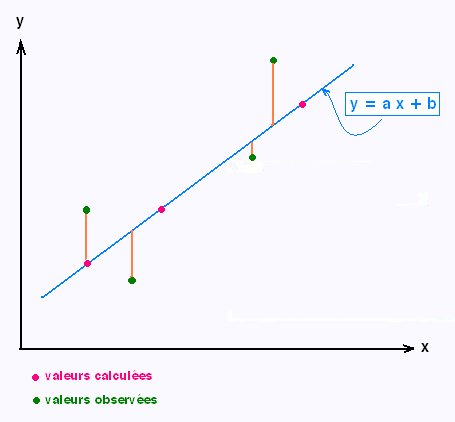

Cours d’économétrie
Cours dispensé aux étudiants de L2 de l’école nationale de statistoques, de planification et de démographe (ENSPD, Parakou, Bénin)
Chapitre 1 : Généralité sur l’économétrie
Définition et objet de l’économétrie
L’objet de la théorie économique est d’expliquer les comportements économiques au travers de modèles décrivant des relations entre des variables économiques : consommation, épargne, revenu, salaire, production, prix, emploi, investissement, taux d’intérêt, etc.
Littéralement, l’économétrie signifie « mesure de l’économie ». Ainsi, l’économétrie est souvent décrite comme la partie de l’économie qui s’occupe de la mesure, du quantitatif. C’est une branche de l’économie qui traite de l’estimation pratique des relations économiques.
L’économétrie exprime quantitativement les corrélations pouvant exister entre des phénomènes économiques dont la théorie affirme l’existence. La théorie économique fournit des idées sur les processus qui déterminent les grandeurs économiques. L’économétrie apporte une vérification empirique et établit quantitativement les corrélations qui apparaissent valides. Elle est, d’une part, un outil à la disposition de l’économiste qui lui permet d’infirmer ou de confirmer les théories qu’il construit et d’autre part, elle est à la croisée de l’économie, des mathématiques et des statistiques.
Méthodologie de l’économétrie
Comment les économétriciens procèdent-ils dans l’analyse d’un problème économique ? Quelle est la méthodologie (démarche) économétrique ? Bien qu’il existe plusieurs courants de pensée sur la méthodologie économétrique, nous présentons ici la méthodologie traditionnelle ou classique, qui domine toujours la recherche empirique en économie et dans d’autres sciences sociales et du comportement.
De manière générale, la méthodologie économétrique traditionnelle suit les étapes suivantes :
Enoncé de la théorie ou d’une hypothèse
Spécification du modèle mathématique de la théorie
Spécification du modèle statistique ou économétrique
Obtention des données
Estimation des paramètres du modèle économétrique
Test d’hypothèses
Prévision
Utilisation du modèle à des fins de contrôle ou de stratégie
Examinons les différentes étapes à suivre lors de la construction d’un modèle, ceci à partir de l’exemple du modèle keynésien simplifie.
Enoncé de la théorie ou d’une hypothèse
Les théories sont des raisonnements destinés à donner une représentation des liens entre les variables économiques. Elles sont souvent fondées sur des hypothèses.
Par exemple, dans la théorie keynésienne, la loi psychologique fondamentale stipule que « en moyenne et la plupart du temps les hommes tendent à accroitre leur consommation à mesure que leur revenu croît, mais cet accroissement est moins que proportionnelle à celui du revenu ». En résumé, Keynes a postulé que la propension marginale à consommer pour une unité de revenu est supérieur à zéro mais inférieur à 1.
Plus ou moins contraignantes, les hypothèses sont des simplifications de la réalité destinées à rendre possible la formulation de théories compréhensibles et utilisables. Ainsi, pour analyser la production, on peut partir de l’hypothèse que les entreprises recherchent la maximisation de leur profit, même si cela n’est pas absolument vrai pour toutes les entreprises à tout moment. L’important est que le modèle bâti explique correctement les décisions des entreprises en matière de production.
Spécification du modèle mathématique de la théorie
Un modèle est un ensemble de lois et d’hypothèses donnant une représentation théorique des mécanismes économiques. Dans le cadre de l’économétrie, nous pouvons considérer qu’un modèle consiste en une présentation formalisée et simplifiée d’un phénomène sous forme d’équations mathématiques dont les variables sont des grandeurs économiques.
L’objectif du modèle est de représenter les traits les plus marquants d’une réalité qu’il cherche à styliser. Le modèle est donc l’outil que le modélisateur utilise lorsqu’il cherche à comprendre et à expliquer des phénomènes. Pour ce faire, il émet des hypothèses et explicite des relations.
Par exemple, bien que Keynes ait postulé une relation positive entre consommation et revenu, il n’a pas précisé la forme exacte de la relation fonctionnelle entre les deux. Ainsi, bien que des considérations d’ordre théorique nous renseignent sur le signe des dérivées, il existe une multitude de fonctions de formes très différentes et ayant des signes identiques, par exemple \(C = a_{0} + a_{1}Y\) et \(C = a_{0} + a_{0}Y^{a_{1}}\)
Cependant ces deux relations ne reflètent pas le même comportement. Une augmentation du revenu provoque un accroissement proportionnel pour la première relation, alors que, dans la seconde, l’effet s’estompe avec l’augmentation du revenu (\(a_{1} < 1\)).
Nous appelons forme fonctionnelle le choix (arbitraire ou fondé) de spécification précise du modèle.
Un économiste pourrait suggérer la forme suivante de la fonction de consommation keynésienne :
\[C = a_{0} + a_{1}Y\text{\ }\ \ \ \ \ \ \ \ \ \ \ \ \ \ \ \ \ \ \ \ \ \ \ \ \ \ \ \ \ \ \ \ \ \ \ \ \ \ \ \ \ \ \ \ \ \ \ \ \ \mathbf{(1)}\]
\[\text{\ }a_{0} > 0\text{\ et\ 0} < a_{1} < 1\]
\(C\) la consommation, \(Y\) le revenu. Le coefficient de la pente \(a_{1}\) représente la propension marginale à consomme et \(a_{0}\) la consommation incompressible. \(a_{0}\) et \(a_{1}\) sont les paramètres du modèle qui représentent respectivement les coefficients d’interception et de la pente.
L’équation (1) indique que la consommation est liée linéairement au revenu. C’est un exemple de modèle mathématique de la relation entre la consommation et le revenu. Cette relation est appelée fonction de consommation en économie.
Un modèle est donc simplement un ensemble d’équations mathématiques.
Si le modèle n’a qu’une équation, comme dans l’exemple ci-dessus, on parle de modèle à équation unique.
Si par contre, il a plus d’une équation, il s’agit d’un modèle à équations multiples.
Formalisation du modèle statistique ou économétrique
Le modèle purement mathématique de la fonction de consommation donné dans l’équation (1) présente un intérêt limité pour l’économètre, car il assure qu’il existe une relation exacte ou déterministe entre consommation et revenu. Mais les relations entre les variables économiques sont généralement inexactes. Ainsi, si nous devions obtenir des données sur les dépenses de consommation et le revenu disponible (c’est-à-dire après impôt) d’un échantillon de 500 familles béninoises, par exemple, et tracer ces données sur un graphique, avec les dépenses de consommation sur l’axe vertical et le revenu disponible sur l’axe horizontal, nous ne nous attendions pas à ce que les 500 observations se situent exactement sur la droite de l’équation (1) ci-dessus.
\[\lbrack Inserer\ un\ graphique\rbrack\]
En effet, outre le revenu, d’autres variables affectent les dépenses de consommation. Par exemple, la taille de la famille, l’âge des membres de la famille, la religion de la famille, etc. sont susceptibles d’exercer une influence sur la consommation.
Pour tenir compte des relations inexactes entre les variables économiques, l’économètre modifierait la fonction de consommation déterministe dans l’équation (1) comme suit :
\[C = a_{0} + a_{1}Y + \varepsilon\ \ \ \ \ \ \ \ \ \ \ \ \ \ \ \ \ \ \ \ \ \ \ \ \ \ \ \ \ \ \ \ \ \ \ \ \ \ \ \ \ \ \ \ \ \ \ \ \ \ \ \ \ \ \ \mathbf{(2)}\]
Où \(\varepsilon\), appelé le terme de perturbation ou d’erreur, est une variable aléatoire (stochastique) qui possède des propriétés probabilistes bien définies. Le terme d’erreur \(\varepsilon\) peut très bien représenter tous les facteurs qui influent sur la consommation mais ne sont pas explicitement pris en compte dans le modèle.
L’équation (2) est un exemple de modèle économétrique. Plus techniquement, il s’agit d’un exemple de modèle de régression linéaire que nous étudierons dans ce cours.
Obtention des données
Pour estimer le modèle économétrique de l’équation (2), c’est-à-dire obtenir les valeurs numériques de \(a_{0}\) et \(a_{1}\), nous avons besoin de données.
Les données
Les données sont utilisées pour analyser le modèle économétrique et donner des recommandations de politique économique. Nous distinguons plusieurs types de données selon que le modèle est spécifié en :
Série temporelle : il s’agit des données sur des variables observées a intervalle de temps réguliers. Elles sont indicées par le temps : \(y_{t}\). Par exemple le Produit Intérieur Brut (PIB) du Bénin exprimé en FCFA sur une période de 20 ans.
Coupe instantanée : les données sont observées au même instant et concernent les valeurs prises par la variable pour un groupe d’individus spécifiques : \(y_{i}\). Leur indice correspond à l’identifiant d’un individu ou d’une entreprise. Par exemple la consommation en riz d’un échantillon d’étudiant en 2018.
Panel : il s’agit de données sur des variables représentant les valeurs prises par un échantillon d’individus à intervalle régulier. Ces variables sont notées : \(y_{it}\). On dispose d’informations sur les individus \(i = 1,...,N\) que l’on suit sur plusieurs période, \(t = 1,...,T\). Par exemple, la consommation d’un échantillon de ménages de la ville de Parakou de 2010 à 2020, le PIB des pays de l’UEMOA de 2000 à 2020, etc.
Cohorte : très proche des données de panel, les données de cohorte se distinguent de la précédente par la constante de l’échantillon. Les individus sondés sont les mêmes d’une période sur l’autre.
Les variables
L’analyse économétrique d’un ensemble de données a, dans la grande majorité des cas, pour objectif de tester la validité et d’évaluer l’ampleur des explications fournies par l’analyse économique. A ce titre, elle s’intéresse donc à l’effet d’un ensemble de variables, dites variables explicatives et notées \(X\) sur une ou plusieurs autres variables appelées variables expliquées, \(Y\). Le choix de ces variables et leur rôle dans le modèle économétrique est déduit de l’analyse économique du problème auquel on s’intéresse.
Une même variable peut ainsi jouer le rôle de variable expliquée dans un modèle économétrique donnée et le rôle de variable explicative dans un modèle différent. Par exemple, l’éducation dans un modèle d’investissement en capital humain est une variable expliquée tandis que dans un modèle formation des salaires, elle est une variable explicative.
La théorie suggère ainsi une relation de causalité spécifique au problème considéré entre les variables auxquelles on s’intéresse. Pour cette raison, la variable expliquée est également souvent qualifiée de dépendante ou endogène, au sens où une relation causale la lie aux variables explicatives considérées. Les variables explicatives sont encore qualifiées de variables indépendantes ou exogènes, au sens où elles peuvent être considéré comme des données (connues) dans le cadre du problème auquel on s’intéresse.
Estimation du modèle économétrique
Dans l’exemple du modèle keynésien, les estimations numériques des paramètres peuvent donner un contenu empirique à la fonction de consommation. Il existe plusieurs mécanismes d’estimation des paramètres des modèles économiques dont la technique statistique de l’analyse de régression linéaire qui fera l’objet de ce cours.
Par exemple, en supposant que les données collectées ont été soumises à un calcul, nous obtenons les estimations suivantes de \(a_{0}\) et \(a_{1}\), à savoir de \(144.06\) et \(0.8262\). Ainsi, la fonction de consommation estimée est :
\[\widehat{C} = 144.06 + 0.8262Y\ \ \ \ \ \ \ \ \ \ \ \ \ \ \ \ \ \ \ \ \ \ \ \ \ \ \ \ \ \ \ \ \ \ \ \ \ \ \ \ \ \ \ \ \ \ \ \ \ \ \ \mathbf{(3)}\]
Le chapeau sur le \(C\) indique qu’il s’agit d’une estimation.
Test d’hypothèse
En supposant que le modèle ajusté soit une approximation raisonnable de la réalité, nous devons élaborer des critères appropriés pour déterminer si les estimations obtenues dans l’équation (3) sont conformes aux attentes de la théorie économique.
Selon la théorie keynésienne, la propension marginale à consommer est positive et inférieure à 1. Dans l’équation (3), la propension marginale à consommer est égale à 0,83. Cependant, avant d’accepter cette estimation comme confirmation de la théorie de la consommation keynésienne, nous devons nous demander si cet estimateur est suffisamment inférieur à l’unité pour nous convaincre qu’il ne s’agit pas d’un événement fortuit ou d’une particularité des données utilisées.
Si, 0,83 est statistiquement inférieur à 1 alors, cela peut conforter la théorie keynésienne. Ce type de confirmation ou de réfutation des théories économiques sur la base d’échantillons repose sur une branche de la théorie statistique appelée inférence statistique (test d’hypothèse).
Définitions
Une hypothèse statistique est une supposition sur un paramètre de la population. Cette supposition peut être ou ne pas être vraie. Pour prouver qu’une hypothèse est vraie ou fausse avec une certitude absolue, nous aurions besoin d’examiner l’ensemble de la population. Les tests d’hypothèses portent sur la façon d’utiliser un échantillon aléatoire pour déterminer si l’hypothèse faite sur la population est vérifiée.
Un test statistique utilise les données obtenues d’un échantillon pour décider si l’hypothèse nulle doit être rejetée ou non. La valeur numérique obtenue à partir d’un test statistique s’appelle la valeur de test (valeur empirique).
Le test d’hypothèse est formulé comme suit :
\[H_{0}:hypothèse\ nulle\]
\[\ \ \ \ \ \ \ \ \ \ \ H_{1}:hypothèse\ alternative\]
L’hypothèse nulle, symbolisée par \(H_{0}\), est une hypothèse statistique stipulant qu’il n’y a pas de différence entre un paramètre et une valeur spécifique ou qu’il n’y a pas de différence entre deux paramètres.
L’hypothèse alternative, symbolisée par \(H_{1}\), est une hypothèse statistique qui énonce une différence spécifique entre un paramètre et une valeur spécifique ou indique qu’il existe une différence entre deux paramètres.
Quatre types de résultats sont possibles dans les tests d’hypothèses. L’hypothèse nulle peut être vraie ou pas et une décision est prise de la rejeter ou de ne pas la rejeter sur la base des données obtenues à partir d’un échantillon.
| \(H_{0}\) est vraie | \(H_{1}\) est vraie | |
|---|---|---|
| Ne pas rejeter \(H_{0}\) | Décision correcte | Erreur de Type II |
| Rejeter \(H_{0}\) | Erreur de Type I | Décision correcte |
Une erreur de type I se produit si l’on rejette l’hypothèse nulle lorsqu’elle est vraie.
Une erreur de type II se produit si l’on ne rejette pas l’hypothèse nulle quand elle est fausse.
- Le degré de significativité est la probabilité maximale de commettre une erreur de type I, c’est-à-dire la probabilité de rejeter l’hypothèse nulle alors qu’elle est vraie. Cette probabilité est symbolisée par \(\alpha\). En d’autres termes :
\[Probabilité\ (erreur\ de\ type\ 1) = \alpha\]
Plus le degré de significativité \(\alpha\) est faible, moins nous sommes susceptibles de commettre une erreur de type I. Généralement, nous aimerions avoir de petites valeurs de \(\alpha\). Les degrés de significativité typiques sont : 10%, 5% et 1%.
Par exemple, lorsque \(\alpha = 10\%\), il y a 10% de chance de rejeter une hypothèse nulle alors qu’elle est vraie.
- Le degré de liberté correspond au nombre de valeurs aléatoires qui ne peuvent être déterminées ou fixés par une équation (par exemple, pour la variabilité totale, connaissant \(n - 1\) valeurs, nous pourrons en déduire la \(n\)-ième, puisque nous connaissons la moyenne \(y\)). Le degré de liberté est égal au nombre d’observations moins le nombre de relations entre ces observations : on pourrait remplacer l’expression « nombre de relations » par « nombre de paramètres à estimer ».
Par exemple, si l’on cherche deux nombres dont la somme est 12, aucun des deux nombres ne doit être déterminé par l’équation \(x + y = 12\). \(x\) peut être choisi arbitrairement, mais alors pour \(y\) il n’y aura alors plus le choix. Ainsi, si vous choisissez 11 comme valeur pour \(x\), \(y\) vaut obligatoirement 1. Il y a donc deux variables aléatoires mais un seul degré de liberté.
Les différents types de test d’hypothèse
Les tests bilatéraux : test de Student sur les estimateurs MCO
Les tests bilatéraux sont sous la forme :
\[H_{0}:\mu = \ \mu_{0}\ \ \ \ \ \ \ \ \ \ \ H_{1}:\mu \neq \mu_{0}\]
Exemple : Un chercheur en médecine voudrait savoir si un nouveau médicament aura des effets secondaires indésirables. Le chercheur est particulièrement préoccupé par le pouls des patients prenant le médicament. Quelles sont les hypothèses pour vérifier si le pouls sera différent du pouls moyen de 82 battements par minute ?
\[H_{0}:\mu = 82\ \ \ \ \ \ \ \ \ \ \ \ \ H_{1}:\mu \neq 82\]
Les tests unilatéraux
Ils sont sous la forme suivante :
\[H_{0}:\mu = \ \mu_{0}\ \ \ \ \ H_{1}:\mu < \mu_{0}\]
ou
\[H_{0}:\mu = \ \mu_{0}\ \ \ \ \ H_{1}:\mu > \mu_{0}\]
Exemple : Un chimiste invente un additif pour augmenter la durée de vie d’une batterie d’automobile. Si la durée de vie moyenne de la batterie est de 36 mois, alors ses hypothèses sont :
\[H_{0}:\mu = \ 36\ \ \ \ \ H_{1}:\mu > 36\]
L’inférence statistique
L’inférence statistique consiste à effectuer des études sur un échantillon et de transposer (ou généraliser) les résultats sur la population. Elle permet de faire des prédictions sur une population à partir des observations et de l’analyse d’un échantillon. Elle permet de déterminer des intervalles de confiance pour des paramètres du modèle ou de tester si un paramètre est significativement inferieur, supérieur ou simplement différent d’une valeur fixée. Il existe deux méthodes d’inférence statistique : l’estimation des paramètres et le test statistique des hypothèses.
Prévision
La prévision, à partir de l’utilisation des modèles économiques, est utilisée par les pouvoirs publics ou entreprises afin d’anticiper et éventuellement réagir à l’environnement économique. Ainsi, si le modèle que nous choisissons ne réfute pas l’hypothèse ou la théorie considérée, l’on pourra l’utiliser pour prédire la ou les valeurs futures de la variable dépendante, sur la base de la ou des valeurs futures connues ou attendues de la variable explicative.
En se basant par exemple sur l’équation (3), supposons que nous voulons prévoir la dépense de consommation principale pour 2022. La valeur du PIB pour 2019 est par exemple de 1500 milliards de francs CFA. En remplaçant cette valeur dans l’équation (3), on pourra prédire la valeur de la consommation pour 2020 comme suit :
\[\widehat{C_{2019}} = 144.06 + 0.8262(1500\ )\ \ \ \ \ \ \ \ \ \ \ \ \ \ \ \ \ \ \ \ \ \ \ \ \ \ \ \ \ \ \ \ \ \ \ \ \ \ \ \ \ \ \ \ \ \ \ \ \ \ \mathbf{(4)}\]
En résumé, la démarche économétrique peut être résumée comme suit :
Chapitre 2 : Introduction à l’analyse de régression linéaire
L’analyse de la régression s’intéresse à l’étude de la dépendance d’une variable (variable dépendante) par rapport à une ou plusieurs variables (variables indépendantes ou explicatives) assortie d’un objectif d’estimer et/ou de prédire la valeur moyenne de la variable dépendante en fonction des valeurs connues ou fixes des variables indépendantes.
Relations statistiques versus relations déterministes
Dans l’analyse de la régression, nous nous intéressons à ce qu’on nomme la dépendance entre variables. Il s’agit de la dépendance statistique et non fonctionnelle ou déterministe que l’on rencontre par exemple en physique classique. Dans la relation statistique entre variables, nous traitons essentiellement des variables aléatoires ou stochastiques (c’est-à-dire variables avec des distributions de probabilité). Par contre, dans la relation déterministe, on s’intéresse aussi à des variables, mais elles ne sont ni aléatoires ni stochastiques.
Par exemple, la dépendance du rendement d’une récolte par rapport à la température, la pluviométrie, l’ensoleillement et les engrais est, par nature, statistique car les variables explicatives, ne permettent pas à l’agriculteur de prédire la récolte avec précision en raison d’erreurs incluses dans la mesure de ces variables ainsi que de plusieurs autres facteurs (variables) qui influent ensemble sur la récolte mais qui sont difficiles à individualiser.
D’un autre côté, dans les relations déterministes comme celle de la loi de Ohm qui s’énonce comme suit : pour les conducteurs métalliques, sur une plage limitée de température, le courant continu \(C\) est proportionnel au voltage \(V\).
\[C = \frac{1}{k}V\ avec\ \frac{1}{k}\ la\ constance\ de\ proportionnalité\]
Cependant en cas d’erreur de mesure, par exemple dans \(k\) la loi de Ohm, la relation déterministe devient une relation statistique.
Régression versus corrélation
Bien que très liées, l’analyse de la corrélation est conceptuellement très différente de l’analyse de la régression. L’analyse de la corrélation mesure l’intensité de la liaison entre deux variables.
Exemple : corrélation entre les notes en statistiques et celles en mathématiques.
L’analyse de la régression quant à elle, a pour objectif d’estimer ou de prévoir la valeur moyenne d’une variable sur la base de valeurs fixées d’autres variables.
Exemple : Prédire la note moyenne d’une épreuve en statistique en disposant de la note d’un étudiant en mathématiques.
Dans l’analyse de la régression, il existe une asymétrie dans le traitement des variables dépendantes et explicatives. Dans l’analyse de la corrélation, les variables sont traitées de manière symétrique. Il n’existe pas de distinction entre variables explicatives et dépendantes.
Présentation du modèle de régression linéaire
Le modèle de régression linéaire désigne un modèle dans lequel l’espérance conditionnelle de \(y\) sachant \(x\) est une transformation affine de \(x\). Le modèle de régression linéaire s’écrit :
\[y = \beta_{0} + \beta_{1}x_{1} + \beta_{2}x_{2} + \ldots + \beta_{k}x_{k} + \varepsilon\]
On parle de la régression de \(y\) sur \(x\), avec \(\beta_{j}\) les paramètres (les coefficients) inconnus du modèle. \(\varepsilon\) est le terme d’erreur.
Signification du terme « linéaire »
Puisque nous nous intéressons avant tout aux modèles linéaires, il est fondamental de connaitre ce que signifie réellement l’adjectif « linéaire » car il peut être interprété de deux manières.
Linéarité dans les variables
Le premier sens, peut-être le plus « naturel » de la linéarité réside dans le fait que l’espérance de \(y\) est une fonction linéaire de \(x_{i}\). Géométriquement, la courbe de régression est, dans ce cas, une droite. Dès lors, une fonction de régression telle que \(y_{i} = \beta_{0} + \beta_{1}x_{1}^{2} + \ldots + \beta_{k}x_{k} + \varepsilon\) n’est pas une relation linéaire car la variable \(x_{1}\) est affectée d’une puissance ou d’un indice de 2.
Linéarité dans les paramètres
La seconde interprétation de la linéarité tient au fait que l’espérance de de \(y\) est une fonction linéaire des paramètres \(\beta_{i}\). Cette espérance peut être ou non linéaire dans les variables, c’est-à-dire par rapport à \(x\). Ainsi, \(y_{i} = \beta_{0} + \beta_{1}x_{1}^{2} + \ldots + \beta_{k}x_{k} + \varepsilon\) est un modèle de régression linéaire dans les paramètres. Par contre, \(y_{i} = \beta_{0} + \beta_{1}^{2}x_{1} + \ldots + \beta_{k}x_{k} + \varepsilon\) n’est pas un modèle de régression linéaire dans les paramètres.
Signification du terme aléatoire
Le terme aléatoire que l’on appelle erreur du modèle, tient un rôle très important dans la régression. Il permet de résumer toute l’information qui n’est pas prise en compte dans la relation linéaire que l’on cherche à établir entre \(Y\) et \(X\) c’est-à-dire les problèmes de spécifications, l’approximation par la linéarité, résumer le rôle des variables explicatives absentes, etc. Le terme d’erreur est un substitut de toutes les variables omises dans le modèle mais qui affectent toutes ensemble \(Y\).
Comme nous le verrons dans la suite du cours, les propriétés des estimateurs du modèle de régression linéaire, reposent en grande partie sur les hypothèses que nous formulerons à propos du terme d’erreur \(\varepsilon\). En pratique, après avoir estimé les paramètres de la régression, les premières vérifications portent sur l’erreur calculée sur les données (on parle de « résidus ») lors de la modélisation.
Le terme d’erreur \(\varepsilon\) peur regrouper les erreurs suivantes :
omission de variables ou imprécision de la théorie : même si la théorie existe, elle peut être insuffisante pour expliquer le comportement de \(Y\). Nous pouvons tenir pour certain que le revenu influe sur la consommation, mais pouvons ignorer les autres variables affectant la consommation ou douter de leur pertinence. Par conséquent, le terme d’erreur peut être utilisé comme substitut à toutes les variables omises dans le modèle.
erreur de mesure : les données ne représentent pas exactement le phénomène
la nature intrinsèquement aléatoire du comportement humain : même si nous réussissons à introduire toutes les variables pertinentes du modèle, il y a des limites au caractère aléatoire des individuels qui ne peuvent être expliquées quelle que soit la somme de travail que nous fournissons. Les perturbations ou terme d’erreur peuvent fort bien refléter cette nature intrinsèquement aléatoire.
- erreur de spécification : même si théoriquement nous disposons des bonnes variables explicatives d’un phénomène et même si nous pouvons nous procurer des données sur ces variables, très souvent nous ne connaissons pas la forme de la relation fonctionnelle entre la variable dépendante et le régresseur.
La consommation est-elle une fonction linéaire ou non linéaire du revenu ? Si c’est le premier cas qui prévaut, alors \(y_{i} = \beta_{0} + \beta_{1}x_{i} + \varepsilon_{i}\) est la relation correcte entre \(X\) et \(Y\) mais si c’est le second cas, \(y_{i} = \beta_{0} + \beta_{1}{x^{2}}_{i} + \varepsilon_{i}\) peut être la forme fonctionnelle adaptée. Dans les modèles à deux variables, la forme fonctionnelle de la relation peut souvent être discernée au diagramme de dispersion. Mais dans un modèle de régression multiple, il est plus difficile de déterminer la forme fonctionnelle adéquate, car graphiquement nous ne pouvons pas visualiser les diagrammes de dispersion à plusieurs dimensions.
- erreur de fluctuation d’échantillonnage : d’un échantillon à l’autre les observations, et donc les estimations, sont légèrement différentes.
Fonction de régression de l’échantillon (FRE) et fonction de régression de la population (FRP)
Dans la plupart des situations concrètes nous ne disposons que d’un échantillon de \(y\) associé à quelques valeurs données de \(x\). Ainsi, notre tâche est d’estimer la fonction de régression à partir des informations fournies par l’échantillon. Nous obtenons alors la fonction de régression de l’échantillon (FRE) contrairement à la fonction de régression de la population (FRP) qui est \(y\) et \(x\) sur toute la population.
En résumé, notre objectif est donc d’estimer, la fonction de régression de la population (RP) :
\[y = \beta_{0} + \beta_{1}x_{1} + \beta_{2}x_{2} + \ldots + \beta_{k}x_{k} + \varepsilon\]
à partir de la fonction de régression de l’échantillon (FRE) obtenue de l’observation de
\[y = {\widehat{\beta}}_{0} + {\widehat{\beta}}_{1}x_{1} + {\widehat{\beta}}_{2}x_{2} + \ldots + {\widehat{\beta}}_{k}x_{k} + e\]
où \(e\) est un estimateur de \(\varepsilon\).
En raison des fluctuations d’échantillonnage, notre estimation de la FRP basée sur la FRE est une approximation.
Chapitre 3 : Estimation des modèles de régression linéaires
Notre tâche consiste à estimer aussi exactement que possible la fonction de régression de la population (FRP) sur la base d’une fonction de régression de l’échantillon (FRE). Les méthodes d’estimation généralement utilisées sont les moindres carres ordinaires (MCO) et le maximum de vraisemblance (MV).
L’estimation par la méthode des moindres carrés ordinaires (MCO)
La méthode des moindres carrés ordinaires est celle qui est plus largement utilisée dans l’analyse de la régression linéaire parce qu’elle est mathématiquement beaucoup plus simple que le maximum de vraisemblance. Cependant, pour la régression linéaire, les deux méthodes fournissent généralement des résultats analogues.
La méthode des MCO est attribuée à Carl Friedrich Gauss, un mathématicien allemand. La méthode consiste en une prescription (initialement empirique), qui est que la fonction \(f(x;\beta)\) qui décrit « le mieux » les données est celle qui minimise la somme quadratique des déviations des mesures aux prédictions de \(f(x;\beta)\).
Les Hypothèses du modèle de régression linéaire
L’estimation du modèle de régression linéaire repose sur un certain nombre d’hypothèses que sont :
- Hypothèse 1 : Le modèle est linéaire dans les paramètres
Cela ne veut pas dire que \(X\) et \(Y\) sont linéaires (elles peuvent être non linéaires), mais plutôt que \(\beta_{0}\) et \(\beta_{1}\) sont linéaires.
- Hypothèse 2 : L’espérance mathématique de l’erreur \(\mathbf{\varepsilon}_{\mathbf{i}}\) est nulle.
La valeur de \(x_{i}\) étant donnée, la moyenne ou l’espérance mathématique du terme d’erreur aléatoire \(\varepsilon_{i}\) est nulle.
\[E\left( \varepsilon_{i} \right) = 0\ ou\ E\left( \varepsilon_{i}׀x_{i} \right) = 0\]
Ainsi, les erreurs \(\varepsilon_{i}\) pour une valeur donnée de \(x_{i}\) (dans la population) est symétrique autour de la sa moyenne. (Figure)
- Hypothèse 3 : L’homoscédasticité ou la constance de la variance de \(\mathbf{\varepsilon}_{\mathbf{i}}\).
La valeur de \(X\) étant donnée, la variance de \(\varepsilon_{i}\) est identique pour toutes les observations.
\(E\left( \varepsilon_{i}^{2} \right) = \sigma_{\varepsilon}^{2}\ \ \ ou\ E\left( \varepsilon_{i}^{2}׀x_{i} \right) = \sigma_{\varepsilon}^{2}\)
La variance de l’erreur est constante : le risque de l’amplitude de l’erreur est le même quelle que soit l’observation. Cette hypothèse s’appelle : hypothèse d’homoscédasticité. Dans le cas où cette hypothèse n’est pas vérifiée, on parle alors de modèle hétéroscédastique.
- Hypothèse 4 : Absence d’autocorrélation des erreurs
Etant donné deux valeurs, \(x_{i}\) et \(x_{j}\) (\(i \neq j)\), la corrélation entre les erreurs \(\varepsilon_{i}\) et \(\varepsilon_{j}\) (\(i \neq j)\) est nulle.
\[E\left( \varepsilon_{i}\varepsilon_{j} \right) = 0\ ou\ E\left( \varepsilon_{i}\varepsilon_{j}׀x_{i},׀x_{j} \right) = 0\ \ \ \ avec\ (i \neq j)\]
\[cov\left( \varepsilon_{i}\varepsilon_{j} \right) = 0\ ou\ cov\left( \varepsilon_{i}\varepsilon_{j}׀x_{i},׀x_{j} \right) = 0\ \ \ \ avec\ (i \neq j)\]
Cette hypothèse signifie que la valeur de \(x_{i}\) étant donnée, les déviations de deux valeurs quelconques de \(Y\) par rapport à leur moyenne ne sont pas corrélées. Autrement dit, les erreurs relatives à 2 observations sont indépendantes. On parle de « non autocorrélation des erreurs ».
- Hypothèse 5 : Covariance nulle entre \(\mathbf{x}_{\mathbf{i}}\mathbf{\ }\)et \(\mathbf{\varepsilon}_{\mathbf{i}}\)
\[E\left( x_{i}\varepsilon_{i} \right) = 0\ \ ou\ \ Cov\left( x_{i}\varepsilon_{i} \right) = 0\ \ \]
Cette hypothèse signifie que l’erreur \(\varepsilon_{i}\ \)est indépendante de la variable explicative \(x_{i}\).
- Hypothèse 6 : \(\mathbf{n}\mathbf{> k}\)
Le nombre d’observations \(n\) doit être plus élevé que le nombre de paramètres \(k\) à estimer (nombre de variables explicatives).
- Hypothèse 7 : Exactitude de la variable indépendante
Les valeurs \(x_{i}\) sont fixées d’un échantillon à un autre (observées sans erreur). On considère que les données collectées sont contrôlées par le statisticien et sont mesurées avec une marge d’erreur négligeable. En termes techniques \(x_{i}\) est supposé non stochastique (non aléatoire). Cependant, la variable dépendante est supposée être statistique, aléatoire ou stochastique, c’est-à-dire ayant une distribution de probabilité. Il existe une distribution de probabilité pour \(y\) pour chaque valeur possible de \(x\). Ainsi, l’espérance mathématique et la variance de la distribution sont donnée par :
\[E(y׀x_{i}) = \beta_{0} + \beta_{1}x\]
\[E\left( y׀x_{i} \right) = Var\left( \beta_{0} + \beta_{1}x + \varepsilon \right) = \sigma^{2}\]
Ainsi, l’esperance mathématique de \(y\) est une fonction linéaire de \(x\) bien que sa variance ne dépende pas de \(x\).
- Hypothèse 8 : La normalité du terme d’erreur
Les hypothèses H2 et H3 sur le terme aléatoire \(\varepsilon_{i}\), peuvent se résumer comme : les \(\varepsilon_{i}\) sont i.i.d (indépendants et identiquement distribués).
\[\mathbf{\varepsilon}_{\mathbf{i}}\mathcal{↝ N}\mathbf{(0,}\mathbf{\sigma}_{\mathbf{\varepsilon}}^{\mathbf{2}}\mathbf{\ }\mathbf{)}\mathbf{\ }\]
Estimation du modèle de régression linéaire simple
Nous allons commencer par la méthode d’estimation le plus élémentaire qui est le modèle de régression linéaire simple. Ce modèle cherche à mettre en évidence la relation de dépendance entre une variable aléatoire réelle à expliquer (variable endogène, dépendante ou réponse) \(y\) et une variable explicative (variable exogène, indépendante, régresseur, contrôle) \(x\).
Soit, le modèle de régression linéaire simple :
\[y_{i} = \beta_{0} + \beta_{1}x_{i} + \varepsilon_{i}\ \ \ \ \ \ \ \ \ avec\ i = 1,\ldots,n\]
Nous cherchons à estimer les paramètres \(\beta_{0}\) et \(\beta_{1}\) du modèle de régression linéaire simple. Pour cela nous avons besoin d’un échantillon issu de la population. Soit un échantillon de taille \(n\) issue de la population, tel que nous ayons des \(n\) pairs de données \((y_{1},x_{1})\), \((y_{2},x_{2})\), \(\ldots,\ (y_{n},x_{n})\) pour chaque observation \(i\).

Les données issues de l’échantillon sont représentées sur le graphique ci-dessus par les nuages de points. Nous voulons partir de ces observations pour estimer la constante \(\beta_{0}\) et la pente \(\beta_{1}\) de la FRP. Cette FRP est donnée par la droite qui est la plus proche possible de tous les nuages de points (observations). Pour chaque point du nuage de points (FRE), il existe un écart par rapport à la FRP. Ces écarts constituent les erreurs et contiennent tous les facteurs non observées qui affectent \(y_{i}\). Ils sont mesurés par la projection parallèlement à l’axe des ordonnées des points sur la droite de régression (FRP).
La méthode des MCO cherche à calculer ou estimer les paramètres inconnus \(\beta_{0}\) et \(\beta_{1}\) à partir des pairs de données en minimisant la somme des carrés des écarts entre la valeur observée de la variable endogène et sa variable calculée (la droite de régression). Le carré permet de donner une pénalité plus grande aux observations plus éloignées de la valeur estimée
La résolution analytique est la suivante :
\[Min\sum_{i = 1}^{n}e_{i}^{2} = Min{\sum_{i}^{}\left( y_{i} - \widehat{y_{i}} \right)}^{2} = Min\left( y_{i} - \left( \widehat{\beta_{0}} + \widehat{\beta_{1}}x_{i} \right) \right)^{2} = Min\ S\left( \beta_{0},\beta_{1} \right)\]
Ou le résidu des MCO pour l’observation \(i\) est donnée par :
\[e_{i} = y_{i} - \left( \widehat{\beta_{0}} + \widehat{\beta_{1}}x_{i} \right)\]
En annulant les dérivées partielles (condition du premier ordre), nous obtenons un système d’équations appelées « équations normales » :
\[\left\{ \begin{matrix} \&\frac{\partial S\left( \beta_{0},\beta_{1} \right)}{\partial\beta_{0}} = - 2\sum_{i = 1}^{n}{\left( y_{i} - \widehat{\beta_{0}} - \widehat{\beta_{1}}x_{i} \right) = 0}\ \ \ \ \ \ \ \ \ \ \ \ \ \ \ (1) \\ \&\frac{\partial S\left( \beta_{0},\beta_{1} \right)}{\partial\beta_{1}} = - 2\sum_{i = 1}^{n}{x_{i}\left( y_{i} - \widehat{\beta_{0}} - \widehat{\beta_{1}}x_{i} \right) = 0}\ \ \ \ \ \ \ \ \ \ \ (2) \\ \end{matrix} \right.\ \]
La première équation donne :
\[\sum_{i = 1}^{n}{y_{i} -}n\widehat{\beta_{0}} - \widehat{\beta_{1}}\sum_{i = 1}^{n}x_{i} = 0\]
or
\[\overline{y} = \frac{1}{N}\sum_{i = 1}^{n}{y_{i}\text{\ et\ }}\overline{x} = \frac{1}{N}\sum_{i = 1}^{n}x_{i}\]
On obtient donc :
\[\overline{y} = \widehat{\beta_{0}} + \widehat{\beta_{1}}\overline{x}\]
\[\widehat{\mathbf{\beta}_{\mathbf{0}}}\mathbf{=}\overline{\mathbf{y}}\mathbf{-}\widehat{\mathbf{\beta}_{\mathbf{1}}}\overline{\mathbf{x}}\]
La deuxième équation devient :
\[\sum_{i = 1}^{n}{x_{i}\left( y_{i} - \widehat{\beta_{0}} - \widehat{\beta_{1}}x_{i} \right) =}\sum_{i = 1}^{n}{x_{i}y_{i}} - \widehat{\beta_{0}}\sum_{i = 1}^{n}x_{i} - \widehat{\beta_{1}}\sum_{i = 1}^{n}{x_{i}}^{2} = 0\]
En remplaçant \(\widehat{\beta_{0}}\) par son expression, on obtient :
\[\sum_{i = 1}^{n}{x_{i}y_{i}} - \left( \overline{y} - \widehat{\beta_{1}}\overline{x} \right)\sum_{i = 1}^{n}x_{i} - \widehat{\beta_{1}}\sum_{i = 1}^{n}{x_{i}}^{2} = 0\]
\[\frac{1}{N}\sum_{i = 1}^{n}{x_{i}y_{i}} - \frac{1}{N}\left( \overline{y} - \widehat{\beta_{1}}\overline{x} \right)\sum_{i = 1}^{n}x_{i} - \widehat{\beta_{1}}\frac{1}{N}\sum_{i = 1}^{n}{x_{i}}^{2} = 0\]
\[\frac{1}{N}\sum_{i = 1}^{n}{x_{i}y_{i}} - \left( \overline{y} - \widehat{\beta_{1}}\overline{x} \right)\overline{x} - \widehat{\beta_{1}}\frac{1}{N}\sum_{i = 1}^{n}{x_{i}}^{2} = 0\]
\[\frac{1}{N}\sum_{i = 1}^{n}{x_{i}y_{i}} - \overline{y}\overline{x} + \widehat{\beta_{1}}{\overline{x}}^{2} - \widehat{\beta_{1}}\frac{1}{N}\sum_{i = 1}^{n}{x_{i}}^{2} = 0\]
\[\ \widehat{\beta_{1}}\left( \frac{1}{N}\sum_{i = 1}^{n}{x^{2}}_{i} - {\overline{x}}^{2} \right) = \frac{1}{N}\sum_{i = 1}^{n}{x_{i}y_{i}} - \overline{y}\overline{x}\]
\[\widehat{\mathbf{\beta}_{\mathbf{1}}}\mathbf{=}\frac{\frac{1}{N}\sum_{\mathbf{i = 1}}^{\mathbf{n}}{\mathbf{x}_{\mathbf{i}}\mathbf{y}_{\mathbf{i}}}\mathbf{-}\overline{\mathbf{y}}\overline{\mathbf{x}}}{\frac{1}{N}\sum_{\mathbf{i = 1}}^{\mathbf{n}}{x_{i}}^{2}\mathbf{-}{\overline{\mathbf{x}}}^{\mathbf{2}}}\mathbf{=}\frac{\sum_{\mathbf{i = 1}}^{\mathbf{n}}\left( \mathbf{x}_{\mathbf{i}}\mathbf{-}\overline{\mathbf{x}} \right)\mathbf{(}\mathbf{y}_{\mathbf{i}}\mathbf{-}\overline{\mathbf{y}}\mathbf{)}}{\sum_{\mathbf{i = 1}}^{\mathbf{n}}\left( \mathbf{x}_{\mathbf{i}}\mathbf{-}\overline{\mathbf{x}} \right)^{\mathbf{2}}}\]
\[\widehat{\mathbf{\beta}_{\mathbf{1}}}\mathbf{=}\frac{\widehat{\text{Cov}\left( \mathbf{x}\mathbf{,}\mathbf{y} \right)}}{\widehat{\mathbf{Var}\left( \mathbf{x} \right)}}\]
Note : \(\widehat{\beta_{0}}\) et \(\widehat{\beta_{1}}\) permettent bien de minimiser la somme du carrée des résidus \(S\left( \beta_{0},\beta_{1} \right)\), car :
\[\left\{ \begin{matrix} \&\frac{\partial^{2}S\left( \beta_{0},\beta_{1} \right)}{\partial\left( \beta_{0} \right)^{2}} = 2 > 0 \\ \&\frac{\partial^{2}S\left( \beta_{0},\beta_{1} \right)}{\partial\left( \beta_{1} \right)^{2}} = 2\sum_{i = 1}^{n}{x_{i}^{2} > 0} \\ \end{matrix} \right.\ \]
Le modèle de régression linéaire multiple avec \(\mathbf{k}\) variables indépendantes
Dans le modèle de régression linéaire simple, nous avons vu que la variable dépendante \(y\) ne pouvait être expliquée qu’en fonction d’une seule variable indépendante, \(x\). Le principal problème lié à l’utilisation de la régression linéaire simple est qu’il est très difficile de tirer des conclusions concernant l’effet de \(x\) sur \(y\), toutes choses étant égales par ailleurs. En règle générale, l’hypothèse 2 \(\mathbf{(}\mathbf{E}\mathbf{(}\mathbf{\varepsilon}_{\mathbf{i}}\mathbf{׀}\mathbf{x}_{\mathbf{i}}\mathbf{) = 0}\)) ne tient pas, car la variable \(x\) est souvent corrélée avec un autre facteur qui influence \(y\).
Le modèle de régression linéaire multiple (RLM), appelé aussi modèle de régression multiple, permet de prendre en compte de façon explicite de nombreux facteurs qui affectent simultanément la variable dépendante. Si l’on ajoute des facteurs utiles pour expliquer la variable dépendante, nous parviendront naturellement à expliquer une plus grande partie de la variation de \(y\). L’utilisation de la régression multiple peut donc conduire à une meilleure prédiction de la variable dépendante.
Le modèle de régression linéaire multiple dans la population peut prendre la forme générale suivante :
\[y = \beta_{0} + \beta_{1}x_{1} + \beta_{2}x_{2} + \ldots + \beta_{k}x_{k} + \varepsilon\]
Où \(\beta_{0}\) est l’ordonnée à l’origine ou la constante, \(\beta_{j}\) mesure la variation de \(\mathbf{y}\) suite à une variation d’une unité de \(x\), les autres facteurs étant fixés. Comme il y a \(k\) variables indépendantes et une ordonnée à l’origine, l’équation de RLM contient \(p = k + 1\) paramètres de population (inconnus).
\(\varepsilon\) est le terme d’erreur ou la perturbation. Il contient les autres facteurs, différents des \(x\) qui affectent la variable dépendante \(y\). Quel que soit le nombre de variables explicatives dans notre modèle, il y aura toujours des facteurs que nous ne pourrons pas inclure ; ils seront tout alors compris dans \(\varepsilon\).
Estimation des paramètres du modèle de régression linéaire multiple par les MCO
La méthode des MCO peut être utilisée pour estimer les coefficients du l’équation du modèle de RLM. Supposons que nous avons, \(n > k\) observations. Soit \(y_{i}\) la \(i\)ème observation de la variable dépendante (de réponse), \(x_{ij}\) est la \(i\)ème observation pour la variable dépendante \(j\). Les données se présenteront comme dans le tableau qui suit :
| Variables dépendantes | |||||
|---|---|---|---|---|---|
| Obersation, \(i\) | Response, \(y\) | \[x_{1}\] | \[x_{2}\] | \[\ldots\] | \[x_{k}\] |
| 1 | \[y_{1}\] | \[x_{11}\] | \[x_{12}\] | \[\ldots\] | \[x_{1k}\] |
| 2 | \[y_{2}\] | \[x_{21}\] | \[x_{22}\] | \[\ldots\] | \[x_{2k}\] |
| \[\vdots\] | \[\vdots\] | \[\vdots\] | \[\vdots\] | \[\vdots\] | |
| \[n\] | \[y_{n}\] | \[x_{n1}\] | \[x_{n2}\] | \[\ldots\] | \[x_{nk}\] |
Le modèle de régression linéaire correspondant, se présente alors comme suit :
\[y_{i} = \beta_{0} + \beta_{1}x_{i1} + \beta_{2}x_{i2} + \ldots + \beta_{k}x_{ik} + \varepsilon_{i}\]
\[y_{i} = \beta_{0} + \sum_{j = 1}^{k}{\beta_{j}x_{ij}} + \varepsilon_{i},\ \ \ \ i = 1,2,\ldots,\ n\ \ \ et\ j = 1,2,\ldots,\ k\]
Sous forme matricielle le modèle s’écrit :
\[Y = X\beta + \varepsilon\]
\(Y = \begin{bmatrix} y_{1} \\ \begin{matrix} y_{2} \\ \vdots \\ \end{matrix} \\ y_{n} \\ \end{bmatrix}\), \(X = \left\lbrack \begin{matrix} \begin{matrix} 1 \\ \begin{matrix} 1 \\ \vdots \\ \end{matrix} \\ \end{matrix} & \begin{matrix} x_{11} \\ \begin{matrix} x_{21} \\ \vdots \\ \end{matrix} \\ \end{matrix} \\ 1 & x_{n1} \\ \end{matrix}\ \ \ \begin{matrix} \begin{matrix} \ldots \\ \begin{matrix} \ldots \\ \vdots \\ \end{matrix} \\ \end{matrix} & \begin{matrix} x_{1k} \\ \begin{matrix} x_{2k} \\ \vdots \\ \end{matrix} \\ \end{matrix} \\ \ldots & x_{nk} \\ \end{matrix} \right\rbrack\) \(\beta = \begin{bmatrix} \beta_{0} \\ \begin{matrix} \beta_{2} \\ \vdots \\ \end{matrix} \\ \beta_{k} \\ \end{bmatrix}\) et \(\varepsilon = \begin{bmatrix} \varepsilon_{1} \\ \begin{matrix} \varepsilon_{2} \\ \vdots \\ \end{matrix} \\ \varepsilon_{n} \\ \end{bmatrix}\)
\(Y\) désigne le vecteur à expliquer de taille \(n \times 1\)
\(X\) la matrice explicative de taille \(n \times p\)
\(\beta\) le vecteur des coefficients du modèle. Il est de taille \(p \times 1\)
\(\varepsilon\) le vecteur d’erreurs de taille \(n \times 1\)
La fonction des moindres carrés associé au modèle de RLM est donnée par :
\[S\left( \beta_{0},\beta_{1},\cdots,\beta_{k} \right) = \sum_{i = 1}^{n}e_{i}^{2} = \ \sum_{i = 1}^{n}\left( y_{i} - \beta_{0} - \sum_{j = 1}^{k}{\beta_{j}x_{ij}} \right)^{2}\]
Pour trouver les estimateurs des MCO, la fonction \(S\left( \beta_{0},\beta_{1},\cdots,\beta_{k} \right)\) doit être minimisée en fonction de \(\beta_{0},\beta_{1},\ \beta_{2},\ldots,\beta_{k}\). Les estimateurs des MCO \({\widehat{\beta}}_{0},{\widehat{\beta}}_{1},\ {\widehat{\beta}}_{2},\ldots,{\widehat{\beta}}_{k}\) satisfont les conditions suivantes :
\[\left\{ \begin{matrix} \&\frac{\partial S\left( \beta_{0},\beta_{1},\cdots,\beta_{k} \right)}{\partial\beta_{0}} = - 2\sum_{i = 1}^{n}{\left( y_{i} - \widehat{\beta_{0}} - \sum_{j = 1}^{k}{\widehat{\beta_{j}}x_{ij}} \right) = 0}\ \ \ \ \ \ \ \ \ \ \ \ \ \ \ (1) \\ \&\frac{\partial S\left( \beta_{0},\beta_{1},\cdots,\beta_{k} \right)}{\partial\beta_{j}} = - 2\sum_{i = 1}^{n}{\left( y_{i} - \widehat{\beta_{0}} - \sum_{j = 1}^{k}{\widehat{\beta_{j}}x_{ij}} \right)x_{ij}} = 0\ \ \ \ \ \ \ j = 1,2,\ldots,\ k\ \ \ \ (2) \\ \end{matrix} \right.\ \]
En simplifiant, nous obtenons les équations normales des MCO qui suivent :
\[\sum_{i = 1}^{n}y_{i} = n\widehat{\beta_{0}} - \widehat{\beta_{1}}\sum_{i = 1}^{n}x_{i1} + \widehat{\beta_{2}}\sum_{i = 1}^{n}x_{i2} + \ldots + \widehat{\beta_{k}}\sum_{i = 1}^{n}x_{ik}\]
\[\sum_{i = 1}^{n}{x_{i1}y}_{i} = \widehat{\beta_{0}}\sum_{i = 1}^{n}x_{i1} + \widehat{\beta_{1}}\sum_{i = 1}^{n}{x_{i1}}^{2} + \widehat{\beta_{2}}\sum_{i = 1}^{n}{x_{i1}x_{i2}} + \ldots + \widehat{\beta_{k}}\sum_{i = 1}^{n}{x_{i1}x_{ik}}\]
\[\vdots .\ \ \ \ \ \ \ \ \ \ \ \ \ \ \ \ = \ \ \ \ \ \ \ \ \vdots \ \ \ \ \ \ \ \ \ \ \ \ \ \ \ \ \ \ \ \ \vdots \ \ \ \ \ \ \ \ \ \ \ \ \ \ \ \ \ \ \ \ \ \ \vdots \ \ \ \ \ \ \ \ \ \ \ \ \ \ \ \ \ \ \ \ \ \ \ \ \ \ \ \ \ \ \ \ \ \ \ \ \ \vdots\]
\[\sum_{i = 1}^{n}{x_{ik}y}_{i} = \widehat{\beta_{0}}\sum_{i = 1}^{n}x_{ik} + \widehat{\beta_{1}}\sum_{i = 1}^{n}{x_{ik}x_{i1}} + \widehat{\beta_{2}}\sum_{i = 1}^{n}{x_{ik}x_{i2}} + \ldots + \widehat{\beta_{k}}\sum_{i = 1}^{n}{x_{ik}}^{2}\]
\(\begin{bmatrix} \sum_{i = 1}^{n}y_{i} \\ \begin{matrix} \sum_{i = 1}^{n}{x_{i1}y}_{i} \\ \vdots \\ \end{matrix} \\ \sum_{i = 1}^{n}{x_{ik}y}_{i} \\ \end{bmatrix} = \left\lbrack \begin{matrix} \begin{matrix} n \\ \begin{matrix} \sum_{i = 1}^{n}x_{i1} \\ \vdots \\ \end{matrix} \\ \end{matrix} & \begin{matrix} \sum_{i = 1}^{n}x_{i1} \\ \begin{matrix} \sum_{i = 1}^{n}{x_{i1}}^{2} \\ \vdots \\ \end{matrix} \\ \end{matrix} \\ \sum_{i = 1}^{n}x_{ik} & \sum_{i = 1}^{n}{x_{ik}x_{i1}} \\ \end{matrix}\ \ \ \begin{matrix} \begin{matrix} \ldots \\ \begin{matrix} \ldots \\ \vdots \\ \end{matrix} \\ \end{matrix} & \begin{matrix} \sum_{i = 1}^{n}x_{ik} \\ \begin{matrix} \sum_{i = 1}^{n}{x_{i1}x_{ik}} \\ \vdots \\ \end{matrix} \\ \end{matrix} \\ \ldots & \sum_{i = 1}^{n}{x_{ik}}^{2} \\ \end{matrix} \right\rbrack\begin{bmatrix} \widehat{\beta_{0}} \\ \begin{matrix} \widehat{\beta_{1}} \\ \vdots \\ \end{matrix} \\ \widehat{\beta_{k}} \\ \end{bmatrix}\)
Pour faciliter la résolution du système d’équation nous allons utiliser la forme matricielle du modèle.
\[S\left( \beta_{0},\beta_{1},\cdots,\beta_{k} \right) = \sum_{i = 1}^{n}e_{i}^{2} = \varepsilon^{'}\varepsilon = (Y - X\beta)^{'}(Y - X\beta)\]
\[S\left( \beta_{0},\beta_{1},\cdots,\beta_{k} \right) = Y^{'}Y - \beta^{'}X^{'}Y - Y^{'}X\beta + \beta^{'}X^{'}X\beta\]
\[S\left( \beta_{0},\beta_{1},\cdots,\beta_{k} \right) = Y^{'}Y - 2\beta^{'}X^{'}Y + \beta^{'}X^{'}X\beta\]
Puisque \(\beta^{'}X^{'}Y\) est une matrice (ou un scalaire) \(1 \times 1\) et sa transposée \(Y^{'}X\beta\) est le même scalaire. La minimisation de \(S\left( \beta_{0},\beta_{1},\cdots,\beta_{k} \right)\) satisfait :
\[\frac{\partial S\left( \beta_{0},\beta_{1},\cdots,\beta_{k} \right)}{\partial\beta} = - 2X^{'}Y + X^{'}X\widehat{\beta}\]
On a :
\[X^{'}X\widehat{\beta} = X^{'}Y\]
Pour résoudre l’équation, on multiplie les deux côtés de l’équation par \({(X^{'}X)}^{- 1}\) en supposant que la matrice \({(X^{'}X)}^{- 1}\) existe. La matrice \({(X^{'}X)}^{- 1}\) va toujours exister si les variables explicatives sont linéairement indépendantes, c’est-à-dire qu’aucune colonne de la matrice \(X\) n’est une combinaison linéaire des autres colonnes.
\[\widehat{\beta} = {(X^{'}X)}^{- 1}X^{'}Y\]
Interprétation de la régression multiple en effet partiel
L’équation estimée par les MCO de la RLM est comme suit :
\[\widehat{y} = \widehat{\beta_{0}} + \widehat{\beta_{1}}x_{1} + \widehat{\beta_{2}}x_{2} + \ldots + \widehat{\beta_{k}}x_{k}\]
\(\widehat{\beta_{0}}\) représente l’ordonnée à l’origine lorsque les \(x_{j}\) sont égales à zéro. Dans certains cas, l’estimation de l’ordonnée à l’origine donne des informations intéressantes ; dans d’autres, elle n’a pas de sens. Notons, cependant que cette ordonnée à l’origine est indispensable si nous désirons obtenir une estimation \(y\) à partir de la régression des MCO lorsque les \(x_{j}\) sont égales à zéro. Sans cette ordonnée à l’origine la valeur du \(y\) sera toujours nulle lorsque les \(x_{j}\) sont égales à zéro.
Les estimations des \(\widehat{\beta_{j}}\) s’interprètent comme des effets marginaux ou des effets ceteris paribus. De l’équation estimée, nous déduisons que :
\[\Delta\widehat{y} = \widehat{\beta_{1}}{\Delta x}_{1} + \widehat{\beta_{2}}{\Delta x}_{2} + \ldots + \widehat{\beta_{k}}{\Delta x}_{k}\]
Toutes choses étant égales par ailleurs, c’est-à-dire si toutes les autres variables sont maintenues constantes ou fixées, le coefficient de \(x_{1}\) mesure le changement de \(\widehat{y}\) dû à une variation d’une unité de \(x_{1}\). Soit :
\[\Delta\widehat{y} = \widehat{\beta_{1}}{\Delta x}_{1}\]
En gardant \(x_{2},x_{3},\ldots,x_{k}\) constants. De cette manière, nous neutralisons l’effet des variables \(x_{2},x_{3},\ldots,x_{k}\) quand nous estimons l’effet de \(x_{1}\) sur \(y\). Les autres coefficients ont une interprétation similaire.
Cas particulier : modèle sans terme constant
La théorie économique postule parfois des relations dans lesquelles \(\beta_{0} = 0\) : c’est le cas par exemple pour une fonction de production de produit industriel où le facteur de production (unique) nul entraîne une production nulle. L’estimation de \(\beta_{1}\) est alors donnée par la formule suivante :
\[\widehat{\beta_{1}} = \frac{\sum_{i = 1}^{N}{x_{i}y_{i}}}{\sum_{i = 1}^{N}x_{i}^{2}}\]
Nous remarquons qu’il s’agit de l’application de la formule générale dans laquelle \(\overline{x}\) et \(\overline{y}\) sont nulles. Dans le cas de variables centrées, c’est donc cette dernière formule qu’il convient d’employer car le terme constant est nul.
Notons que, les données sont centrées lorsque les observations sont centrées sur leur moyenne : \(\left( x_{i} - \overline{x} \right)\), la somme des données centrées est donc par construction nulle.
Propriétés des estimateurs des MCO
Propriétés 1 : Les estimateurs MCO sont sans biais
Par définition le biais d’un paramètre \(\theta\) dont l’estimateur est \(\widehat{\theta}\) est donné par :
\[\mathbf{Biais = E}\left( \widehat{\mathbf{\theta}} \right)\mathbf{- \theta}\]
Ainsi, l’estimateur des MCO est sans biais si : \(\mathbf{E}\left( \widehat{\mathbf{\beta}_{\mathbf{i}}} \right)\mathbf{=}\mathbf{\beta}_{\mathbf{i}}\)
NB : Démontrer les équivalences suivantes (Annexe B de Wooldridge)
\(\sum_{i = 1}^{n}\left( x_{i} - \overline{x} \right)\left( y_{i} - \overline{y} \right) = \sum_{i = 1}^{n}\left( x_{i} - \overline{x} \right)y_{i}\)
\[\sum_{i = 1}^{n}\left( y_{i} - \overline{y} \right)^{2} = \sum_{i = 1}^{N}{y_{i}}^{2} - n{\overline{y}}^{2}\]
\[\sum_{i = 1}^{n}\left( x_{i} - \overline{x} \right)x_{i} = \sum_{i = 1}^{n}\left( x_{i} - \overline{x} \right)^{2} = SCE\]
\[\sum_{i = 1}^{n}\left( x_{i} - \overline{x} \right) = 0\]
1er cas : L’intercepte
\[\widehat{\beta_{1}} = \frac{\sum_{i = 1}^{n}\left( x_{i} - \overline{x} \right)(y_{i} - \overline{y})}{\sum_{i = 1}^{n}\left( x_{i} - \overline{x} \right)^{2}}\]
\[\widehat{\beta_{1}} = \frac{\sum_{i = 1}^{n}\left( x_{i} - \overline{x} \right)y_{i}}{\sum_{i = 1}^{n}\left( x_{i} - \overline{x} \right)^{2}}\]
\[\widehat{\beta_{1}} = \frac{\sum_{i = 1}^{n}\left( x_{i} - \overline{x} \right)(\beta_{0} + \beta_{1}x_{i} + \varepsilon_{i})}{\sum_{i = 1}^{n}\left( x_{i} - \overline{x} \right)^{2}}\]
\[\widehat{\beta_{1}} = \frac{\sum_{i = 1}^{n}\left( x_{i} - \overline{x} \right)(\beta_{0} + \beta_{1}x_{i} + \varepsilon_{i})}{\sum_{i = 1}^{n}\left( x_{i} - \overline{x} \right)^{2}}\]
\[\widehat{\beta_{1}} = \frac{\beta_{0}\sum_{i = 1}^{n}\left( x_{i} - \overline{x} \right) + \beta_{1}\sum_{i = 1}^{n}\left( x_{i} - \overline{x} \right)x_{i} + \sum_{i = 1}^{n}\left( x_{i} - \overline{x} \right)\varepsilon_{i}}{\sum_{i = 1}^{n}\left( x_{i} - \overline{x} \right)^{2}}\]
Sachant que \(\sum_{i = 1}^{n}\left( x_{i} - \overline{x} \right) = 0\) et \(\sum_{i = 1}^{n}\left( x_{i} - \overline{x} \right)x_{i} = \sum_{i = 1}^{n}\left( x_{i} - \overline{x} \right)^{2}\)
\[\widehat{\beta_{1}} = \beta_{1} + \frac{\sum_{i = 1}^{n}\left( x_{i} - \overline{x} \right)\varepsilon_{i}}{\sum_{i = 1}^{n}\left( x_{i} - \overline{x} \right)^{2}}\]
\[E(\widehat{\beta_{1})} = E(\beta_{1}) + \frac{\sum_{i = 1}^{n}\left( x_{i} - \overline{x} \right)E(\varepsilon_{i})}{\sum_{i = 1}^{n}\left( x_{i} - \overline{x} \right)^{2}}\]
\[\mathbf{E}\left( \widehat{\mathbf{\beta}_{\mathbf{1}}} \right)\mathbf{=}\mathbf{\beta}_{\mathbf{1}}\]
2e cas : La constante
\[\widehat{\beta_{0}} = \overline{y} - \widehat{\beta_{1}}\overline{x}\]
\[\widehat{\beta_{0}} = \beta_{0} + \beta_{1}\overline{x} + \overline{\varepsilon} - \widehat{\beta_{1}}\overline{x}\]
\[\widehat{\beta_{0}} = \beta_{0} - (\widehat{\beta_{1}} - \beta_{1})\overline{x} + \overline{\varepsilon}\]
Or \(E\left( \widehat{\beta_{1}} - \beta_{1} \right) = 0\), donc :
\[E(\widehat{\beta_{0})} = {E(\beta}_{0}) + E(\overline{\varepsilon})\]
\[\mathbf{E(}\widehat{\mathbf{\beta}_{\mathbf{0}}}\mathbf{) =}\mathbf{\beta}_{\mathbf{0}}\]
En conclusion, les estimateurs des MCO sont sans biais si et seulement si les deux hypothèses suivantes sont respectées :
Hypothèse 2 : L’exogène \(\mathbf{x}\) n’est pas stochastique (X est non aléatoire) ;
Hypothèse 3 : \(E\left( \varepsilon_{i} \right) = 0\), l’espérance de l’erreur est nulle.
Propriété2 : Les estimateurs MCO sont convergents
Un estimateur \(\widehat{\theta}\) est convergent si : \(\mathbf{Lim\ V}\left( \widehat{\theta} \right)\mathbf{\rightarrow 0\ lorsque\ n \rightarrow \infty}\)
1er cas : L’intercepte
Calculons la Variance de \(\widehat{\beta_{1}}\ \):
\[\widehat{\beta_{1}} = \frac{\sum_{i = 1}^{n}\left( x_{i} - \overline{x} \right)(y_{i} - \overline{y})}{\sum_{i = 1}^{n}\left( x_{i} - \overline{x} \right)^{2}}\]
Or \(\sum_{i = 1}^{n}\left( x_{i} - \overline{x} \right)\left( y_{i} - \overline{y} \right) = \sum_{i = 1}^{n}\left( x_{i} - \overline{x} \right)y_{i}\)
On a donc :
\[\widehat{\beta_{1}} = \frac{\sum_{i = 1}^{n}\left( x_{i} - \overline{x} \right)y_{i}}{\sum_{i = 1}^{n}\left( x_{i} - \overline{x} \right)^{2}}\]
\[Var\left( \widehat{\beta_{1}} \right) = Var\left( \frac{\sum_{i = 1}^{n}\left( x_{i} - \overline{x} \right)y_{i}}{\sum_{i = 1}^{n}\left( x_{i} - \overline{x} \right)^{2}} \right) = \left( \frac{\sum_{i = 1}^{n}\left( x_{i} - \overline{x} \right)}{\sum_{i = 1}^{n}\left( x_{i} - \overline{x} \right)^{2}} \right)^{2}Var\left( y_{i} \right)\]
\[\mathbf{V}\left( \widehat{\mathbf{\beta}_{\mathbf{1}}} \right)\mathbf{=}\frac{\mathbf{\sigma}_{\mathbf{\varepsilon}}^{\mathbf{2}}}{\sum_{\mathbf{i = 1}}^{\mathbf{n}}\left( \mathbf{x}_{\mathbf{i}}\mathbf{-}\overline{\mathbf{x}} \right)^{\mathbf{2}}}\mathbf{=}\frac{\mathbf{\sigma}_{\mathbf{\varepsilon}}^{\mathbf{2}}}{\mathbf{SCE}}\]
Une autre méthode de calculer la variance de \(\widehat{\mathbf{\beta}_{\mathbf{1}}}\)
\[\widehat{\beta_{1}} = \beta_{1} + \ \frac{\sum_{i = 1}^{n}\left( x_{i} - \overline{x} \right)\varepsilon_{i}}{\sum_{i = 1}^{n}\left( x_{i} - \overline{x} \right)^{2}}\]
\[V\left( \widehat{\beta_{1}} \right) = Var\left( \beta_{1} + \ \frac{\sum_{i = 1}^{n}\left( x_{i} - \overline{x} \right)\varepsilon_{i}}{\sum_{i = 1}^{n}\left( x_{i} - \overline{x} \right)^{2}} \right)\]
\[\ \ \ \ \ \ \ \ \ \ \ \ \ = Var\left( \beta_{1} \right) + Var\left( \frac{\sum_{i = 1}^{n}\left( x_{i} - \overline{x} \right)\varepsilon_{i}}{\sum_{i = 1}^{n}\left( x_{i} - \overline{x} \right)^{2}} \right)\]
\[\ \ \ \ \ \ \ \ \ \ \ \ \ = 0 + \frac{\frac{1}{n^{2}}\sum_{i = 1}^{n}\left( x_{i} - \overline{x} \right)^{2}Var(\varepsilon_{i})}{\frac{1}{n^{2}}\sum_{i = 1}^{n}\left( x_{i} - \overline{x} \right)^{4}} = \frac{\frac{1}{n}Var(x)Var(\varepsilon_{i})}{{(Var(x))}^{2}}\]
\[\ \ \ \ \ \ \ \ \ \ \ \ \ = \frac{Var(\varepsilon_{i})}{\sum_{i = 1}^{n}\left( x_{i} - \overline{x} \right)^{2}}\]
Or d’après les hypothèses MCO : \(Var(\varepsilon_{i}) = \ \sigma_{\varepsilon}^{2}\), donc :
\[\mathbf{V}\left( \widehat{\mathbf{\beta}_{\mathbf{1}}} \right)\mathbf{=}\frac{\mathbf{\sigma}_{\mathbf{\varepsilon}}^{\mathbf{2}}}{\sum_{\mathbf{i = 1}}^{\mathbf{n}}\left( \mathbf{x}_{\mathbf{i}}\mathbf{-}\overline{\mathbf{x}} \right)^{\mathbf{2}}}\mathbf{=}\frac{\mathbf{\sigma}_{\mathbf{\varepsilon}}^{\mathbf{2}}}{\mathbf{SCE}}\]
Convergence de \(\widehat{\mathbf{\beta}_{\mathbf{1}}}\)
\[lorsque\ n \rightarrow \infty\ alors\ \sum_{i = 1}^{n}\left( x_{i} - \overline{x} \right)^{2}\ tend\ également\ vers\ \infty,\ d^{'}où\ V\left( \widehat{\beta_{1}} \right) \rightarrow 0\ car\ \sigma^{2} = cst\]
Il s’en suit donc que \(\widehat{\mathbf{\beta}_{\mathbf{1}}}\) est estimateur convergent.
2e cas : La constante
Calculons la Variance de \(\widehat{\beta_{0}}\ \):
\[Var(\widehat{\beta_{0})} = Var(\overline{y} - \widehat{\beta_{1}}\overline{x})\]
\[\ \ \ \ \ \ \ \ \ \ \ \ \ \ \ \ \ \ = Var\left( \overline{y} \right) + Var(\widehat{\beta_{1})}{\overline{x}}^{2} - 2\overline{x}cov\left( \overline{y},\widehat{\beta_{1}} \right)\]
On montre que \(cov\left( \overline{y},\widehat{\beta_{1}} \right) = 0\). On a donc :
\[\ Var(\widehat{\beta_{0})} = Var(\frac{1}{n}\sum_{i = 1}^{n}y_{i}) - \frac{\sigma_{\varepsilon}^{2}}{\sum_{i = 1}^{n}\left( x_{i} - \overline{x} \right)^{2}}{\overline{x}}^{2}\]
\[\ \ \ \ \ \ \ \ \ \ \ \ \ \ \ \ \ \ = \frac{1}{n^{2}}\sum_{i = 1}^{n}{y_{i}}^{2} - \frac{\sigma_{\varepsilon}^{2}}{\sum_{i = 1}^{n}\left( x_{i} - \overline{x} \right)^{2}}{\overline{x}}^{2}\]
\[\ \ \ \ \ \ \ \ \ \ \ \ \ \ \ \ \ \ = \frac{1}{n}Var(y_{i}) - \frac{\sigma_{\varepsilon}^{2}}{\sum_{i = 1}^{n}\left( x_{i} - \overline{x} \right)^{2}}{\overline{x}}^{2}\]
\[\mathbf{V}\left( \widehat{\mathbf{\beta}_{\mathbf{0}}} \right)\mathbf{=}\mathbf{\sigma}_{\mathbf{\varepsilon}}^{\mathbf{2}}\left( \frac{\mathbf{1}}{\mathbf{n}}\mathbf{+}\frac{{\overline{\mathbf{x}}}^{\mathbf{2}}}{\sum_{\mathbf{i = 1}}^{\mathbf{n}}\left( \mathbf{x}_{\mathbf{i}}\mathbf{-}\overline{\mathbf{x}} \right)^{\mathbf{2}}} \right)\mathbf{=}\mathbf{\sigma}^{\mathbf{2}}\left( \frac{\mathbf{1}}{\mathbf{n}}\mathbf{+}\frac{{\overline{\mathbf{x}}}^{\mathbf{2}}}{\mathbf{SCE}} \right)\]
\[\mathbf{lorsque\ n \rightarrow \infty\ alors\ Lim\ }\mathbf{V}\left( \widehat{\mathbf{\beta}_{\mathbf{0}}} \right)\mathbf{\rightarrow 0}\]
On démontre ainsi que \(\widehat{\mathbf{\beta}_{\mathbf{0}}}\) est aussi convergent comme \(\widehat{\mathbf{\beta}_{\mathbf{1}}}\).
Théorème de Gauss-Markov
Selon le théorème de Gauss-Markov, les estimateurs des MCO de la régression sont sans biais et convergents. On peut même aller plus loin et prouver que parmi les estimateurs linéaires sans biais de la régression, les estimateurs MCO sont à variance minimale c.-à-d. il n’existe pas d’autres estimateurs linéaires sans biais présentant une plus petite variance. Les estimateurs des MCO sont BLUE (Best Linear Unbiased Estimator). On dit qu’ils sont efficaces.
Autres propriétés algébriques des MCO
Propriété 1 : La moyenne des résidus est nulle :
\[\frac{1}{N}\sum_{i = 1}^{N}{e_{i} = 0}\]
En effet
\[\frac{1}{N}\sum_{i = 1}^{N}e_{i} = \frac{1}{N}\sum_{i = 1}^{N}\left\lbrack y_{i} - \left( \widehat{\beta_{0}} + \widehat{\beta_{1}}x_{i} \right) \right\rbrack = \overline{y} - \widehat{\beta_{0}} - \widehat{\beta_{1}}\overline{x} = \overline{y} - \left( \overline{y} - \widehat{\beta_{1}}\overline{x} \right) - \widehat{\beta_{1}}\overline{x} = 0\]
Propriété 2 : La covariance entre les résidus et les valeurs de la variable explicative est nulle :
\[\sum_{i = 1}^{N}{x_{i}e_{i} = 0}\]
Propriété 3 : La régression passe par le point moyen de l’échantillon :
\[\overline{y} = \widehat{\beta_{0}} + \widehat{\beta_{1}}\overline{x}\]
Propriété 4 : La somme des valeurs observées de \(y_{i}\) est égale à la somme des valeurs ajustées \(\widehat{y_{i}}\).
\[\sum_{i = 1}^{N}y_{i} = \sum_{i = 1}^{N}\widehat{y_{i}}\]
Propriété 5 : La covariance entre les résidus et les valeurs prédites sont nulle :
\[\sum_{i = 1}^{N}{\widehat{y_{i}}e_{i}} = \sum_{i = 1}^{N}\left( \widehat{\beta_{0}} + \widehat{\beta_{1}}x_{i} \right)e_{i} = \widehat{\beta_{0}}\sum_{i = 1}^{N}e_{i} + \widehat{\beta_{1}}\sum_{i = 1}^{N}{x_{i}e_{i}} = 0\]
Propriété 6 : L’estimateur de la variance des erreurs est sans biais
Nous allons commencer par montrer la différence entre les erreurs (ou perturbations) et les résidus.
A partir des MCO, la valeur prédite de \(\widehat{y_{i}}\) conditionnellement à \(x_{i}\) est :
\[\widehat{y_{i}} = \widehat{\beta_{0}} + \widehat{\beta_{1}}x_{i}\]
Le modèle de régression simple peut s’écrire sous deux formes selon qu’il s’agit
du modèle théorique spécifié par l’économiste ou du modèle estimé à partir d’un
échantillon.
Modèle théorique spécifié par l’économiste avec \(\varepsilon_{i}\) l’erreur inconnue :
\[y = \beta_{0} + \beta_{1}x_{i} + \varepsilon_{i}\]
Modèle estimé à partir d’un échantillon d’observations :
\[y_{i} = \widehat{\beta_{0}} + \widehat{\beta_{1}}x_{i} + e_{i}\]
\[\mathbf{y}_{\mathbf{i}}\mathbf{=}\widehat{\mathbf{y}_{\mathbf{i}}}\mathbf{+}\mathbf{e}_{\mathbf{i}}\]
La droite de régression des MCO est :
\[\widehat{y} = \widehat{\beta_{0}} + \widehat{\beta_{1}}x_{i}\]
Le résidu des MCO est :
\[e_{i} = y_{i} - \widehat{y_{i}} = \left( \beta_{0} + \beta_{1}x_{i} + \varepsilon_{i} \right) - \left( \widehat{\beta_{0}} + \widehat{\beta_{1}}x_{i} \right)\]
\[\mathbf{e}_{\mathbf{i}}\mathbf{=}\mathbf{\varepsilon}_{\mathbf{i}}\mathbf{+}\left( \mathbf{\beta}_{\mathbf{0}}\mathbf{-}\widehat{\mathbf{\beta}_{\mathbf{0}}} \right)\mathbf{+ (}\mathbf{\beta}_{\mathbf{1}}\mathbf{-}\mathbf{\beta}_{\mathbf{1}}\mathbf{)}\mathbf{x}_{\mathbf{i}}\]
Le résidu observé \(e_{i}\) est donc la différence entre les valeurs observées de la variable à expliquer et les valeurs ajustées à l’aide des estimations des coefficients du modèle. Les erreurs ne peuvent jamais être observées alors que les résidus sont calculés à partir d’une base de données.
On constate que le résidu \(e_{i}\) n’est pas égal à l’erreur \(\varepsilon_{i}\). C’est la différence attendue entre ces deux termes qui est égale à zéro comme pour \(\beta_{0}\) et \(\widehat{\beta_{0}}\), d’une part et \(\beta_{1}\) et \(\widehat{\beta_{1}}\), d’autre part.
Maintenant que nous comprenons la différence entre les erreurs et les résidus, nous pouvons estimer la variance de l’erreur \(\sigma^{2}\). Comme \(\mathbf{\sigma}^{\mathbf{2}}\mathbf{= E(}{\varepsilon_{i}}^{\mathbf{2}}\mathbf{)}\), on pourrait penser que \(\frac{1}{n}\sum_{i = 1}^{n}{\varepsilon_{i}}^{\mathbf{2}}\) est un estimateur sans biais de \(\sigma^{2}\). Ce n’est malheureusement pas le cas pour la simple raison qu’il est impossible d’observer les erreurs \(\varepsilon_{i}\). La bonne nouvelle est que nous pouvons remplacer les erreurs par les résidus. Nous obtenons alors :
\[\frac{1}{n}\sum_{i = 1}^{n}{\mathbf{e}_{\mathbf{i}}}^{\mathbf{2}} = \frac{SCR}{n}\]
Il s’agit d’un « vrai estimateur » car il offre une règle de calcul qui s’applique à n’importe quel échantillon de données. L’inconvénient de cet estimateur est qu’il est biaisé, bien que ce biais soit négligeable lorsque \(n\) est grand. L’estimateur \(\frac{SCR}{n}\) est biaisé pour la principale raison qu’il ne tient pas compte de deux contraintes que les résidus des MCO doivent respecter, à savoir :
\(\sum_{i = 1}^{N}{e_{i} = 0}\) et \(\sum_{i = 1}^{N}{x_{i}e_{i} = 0}\)
En tenant compte de ces deux contraintes, nous perdons deux degrés de liberté. Si nous connaissons la valeur des \(n - 2\) résidus dans notre échantillon, nous sommes contraints de choisir les deux derniers résidus de sorte que ces conditions soient respectées. C’est la raison pour laquelle, il n’y a que \(n - 2\) degrés de liberté dans les résidus. Ainsi, l’estimateur sans biais de \(\sigma^{2}\)que nous allons utiliser doit tenir compte de l’ajustement relatif aux degrés de liberté.
\[\widehat{\sigma^{2}} = \frac{1}{n - 2}\sum_{i = 1}^{n}{\mathbf{e}_{\mathbf{i}}}^{\mathbf{2}} = \frac{SCR}{n - 2}\]
On a :
\[SCR = \sum_{i = 1}^{N}{e_{i}}^{2} = \sum_{i = 1}^{N}{(y_{i} - \widehat{y_{i}})}^{2}\]
\[SCR = \sum_{i = 1}^{N}{e_{i}}^{2} = \sum_{i = 1}^{N}{(y_{i} - (\widehat{\beta_{0}} + \widehat{\beta_{1}}x_{i}))}^{2} = \sum_{i = 1}^{N}{y_{i}}^{2} - n{\overline{y}}^{2} - \widehat{\beta_{1}}\sum_{i = 1}^{n}\left( x_{i} - \overline{x} \right)^{2}\]
Or,
\[\sum_{i = 1}^{N}{y_{i}}^{2} - n{\overline{y}}^{2} = \sum_{i = 1}^{n}\left( y_{i} - \overline{y} \right)^{2} = SCT\]
\[\sum_{i = 1}^{n}\left( x_{i} - \overline{x} \right)^{2} = SCE\]
\[SCR = SCT - \widehat{\beta_{1}}SCE\]
\[\widehat{\mathbf{\sigma}^{\mathbf{2}}}\mathbf{=}\frac{\mathbf{SCT}\mathbf{-}\widehat{\beta_{1}}\mathbf{SCE}}{\mathbf{n - 2}}\]
La méthode du maximum de vraisemblance
La méthode du maximum de vraisemblance (MV) (en anglais « Maximum Likelihood method » ou ML method) permet aussi d’estimer les paramètres d’un modèle de régression, sous l’hypothèse que la vraie (loi) distribution desdits paramètres est connue.
Si le principe pour les MCO est de trouver le paramètre qui minimise la somme des carrés des erreurs, la méthode du maximum de vraisemblance cherche par contre à trouver le paramètre à même (avec une forte probabilité) de reproduire les vraies valeurs de l’échantillon (celles réellement observées). Autrement dit, l’estimation par la méthode du maximum de vraisemblance cherche à trouver les valeurs des paramètres qui rendent l’observation de l’échantillon le plus vraisemblable.
L’on notera aussi que, sous l’hypothèse que les erreurs sont normalement distribuées
\(\mathbf{\varepsilon}\mathcal{↝ N}\mathbf{(0,}\mathbf{\sigma}_{\mathbf{\varepsilon}}^{\mathbf{2}}\mathbf{\ }\mathbf{)}\), les estimateurs des MCO et ceux du maximum de vraisemblance sont identiques.
Supposons que, dans le modèle de régression linéaire simple comme suit :
\[Y_{i} = \beta_{0} + \beta_{1}X_{i} + \varepsilon_{i}\]
\(Y_{i}\) est linéairement indépendants du terme d’erreur \(\varepsilon_{i}\) et suit une distribution normale, avec une moyenne : \(E\left( Y_{i} \right) = \beta_{0} + \beta_{1}X_{i}\) et une variance = \(V\left( Y_{i} \right) = \sigma^{2}\)
On sait que : \(\varepsilon_{i}\mathcal{↝ N}(0,\sigma_{\varepsilon}^{2}\mathbf{)}\), alors \(E\left( \varepsilon_{i} \right) = 0\). On en déduit que :
\[\mathbf{E}\left( \mathbf{Y}_{\mathbf{i}} \right)\mathbf{= E}\left( \mathbf{\beta}_{\mathbf{0}}\mathbf{+}\mathbf{\beta}_{\mathbf{1}}\mathbf{X}_{\mathbf{i}}\mathbf{+}\mathbf{\varepsilon}_{\mathbf{i}} \right)\mathbf{=}\mathbf{\beta}_{\mathbf{0}}\mathbf{+}\mathbf{\beta}_{\mathbf{1}}\mathbf{X}_{\mathbf{i}}\]
Puisque :
\[\mathbf{Y}_{\mathbf{i}}\mathbf{- E}\left( \mathbf{Y}_{\mathbf{i}} \right)\mathbf{=}\left( \beta_{0} + \beta_{1}X_{i} + \varepsilon_{i} \right)\mathbf{-}\left( \beta_{0} + \beta_{1}X_{i} \right)\mathbf{=}\varepsilon_{i}\]
Alors :
\[\mathbf{Var}\left( \mathbf{Y}_{\mathbf{i}} \right)\mathbf{=}{\mathbf{E}\left\lbrack \mathbf{Y}_{\mathbf{i}}\mathbf{- E}\left( \mathbf{Y}_{\mathbf{i}} \right) \right\rbrack}^{\mathbf{2}}\mathbf{=}{\mathbf{E}\left\lbrack \varepsilon_{i} \right\rbrack}^{\mathbf{2}}\mathbf{=}\sigma_{\varepsilon}^{2}\]
D’où, la distribution de \(\mathbf{Y}_{\mathbf{i}}\mathbf{\ }\)est comme suit :
\[Y_{i}\mathcal{↝ N}\left\lbrack \left( \beta_{0} + \beta_{1}X_{i} \right)\mathbf{;}\sigma_{\varepsilon}^{2} \right\rbrack\]
On définit une fonction de densité de probabilité jointe qui, compte tenu de l'indépendance des Y, peut s'écrire comme un produit de n fonctions de densité individuelles, soit :
\[f\left( Y_{1},Y_{2},\ldots Y_{n} \middle| \beta_{0} + \beta_{1}X_{i},\sigma_{\varepsilon}^{2} \right) = f\left( Y_{1} \middle| \beta_{0} + \beta_{1}X_{i},\ \sigma_{\varepsilon}^{2} \right) \times \left( Y_{2} \middle| \beta_{0} + \beta_{1}X_{i},\ \sigma_{\varepsilon}^{2} \right) \times \ldots \times \left( Y_{n} \middle| \beta_{0} + \beta_{1}X_{i},\ \sigma_{\varepsilon}^{2} \right)\]
\[= \prod_{i = 1}^{n}{f\left( Y_{i} \right)\ }\]
Où la \(f\left( Y_{i} \right)\) est la fonction de densité de la loi normale de moyenne \(\beta_{0} + \beta_{1}X_{i}\) et de variance \(\sigma_{\varepsilon}^{2}\).
\[f\left( Y_{i} \right) = \frac{1}{\sqrt{2\pi\sigma_{\varepsilon}}}\exp\left\{ - \frac{1}{2}\frac{\left( Y_{i} - \beta_{0} - \beta_{1}X_{i} \right)²}{\sigma_{\varepsilon}^{2}} \right\}\]
La fonction de densité de probabilité jointe devient alors :
\[\begin{matrix} f\left( Y_{1},Y_{2},\ldots Y_{n} \middle| \beta_{0} + \beta_{1}X_{i},\sigma_{\varepsilon}^{2} \right) = \prod_{i = 1}^{n}{\frac{1}{\sqrt{2\pi\sigma_{\varepsilon}}}\exp\left\{ - \frac{1}{2}\frac{\left( Y_{i} - \beta_{0} - \beta_{1}X_{i} \right)²}{\sigma^{2}} \right\}} \\ \ \ \ \ \ \ \ \ \ \ \ \ \ \ \ \ \ \ \ \ \ \ \ \ \ \ \ \ \ \ \ \ \ \ \ \ \ \ \ \ \ \ \ \ \ \ \ \ \ \ \ \ \ \ \ \ \ \ = \frac{1}{{\sqrt{2\pi\sigma_{\varepsilon}}}^{n}}\exp\left\{ - \frac{1}{2}\sum_{}^{}\frac{\left( Y_{i} - \beta_{0} - \beta_{1}X_{i} \right)²}{\sigma_{\varepsilon}^{2}} \right\} \\ \end{matrix}\]
La fonction précédente est appelée fonction de vraisemblance, notée \(L\left( \beta_{0},\beta_{1},\sigma_{\varepsilon}^{2} \right)\) que l’on écrit :
\[L\left( \beta_{0},\beta_{1},\sigma_{\varepsilon}^{2} \right) = \frac{1}{{\sqrt{2\pi\sigma_{\varepsilon}}}^{n}}\exp\left\{ - \frac{1}{2}\sum_{}^{}\frac{\left( Y_{i} - \beta_{0} - \beta_{1}X_{i} \right)²}{\sigma_{\varepsilon}^{2}} \right\}\]
Lorsqu’on effectue une transformation logarithmique de la fonction de vraisemblance ci-dessus, l’on obtient la fonction log-vraisemblance qui servira de base à l’estimation des paramètres \(\widetilde{\mathbf{\beta}_{\mathbf{0}}}\ \)et \(\widetilde{\mathbf{\beta}_{\mathbf{1}}}\) du maximum de vraisemblance. La fonction log-vraisemblance s’écrit :
\[\ln{L\left( \beta_{0},\beta_{1},\sigma_{\varepsilon}^{2} \right)} = - n\ln\sigma_{\varepsilon} - \frac{n}{2}\ln{(2\pi}) - \frac{1}{2}\sum_{}^{}\frac{\left( Y_{i} - \beta_{0} - \beta_{1}X_{i} \right)²}{\sigma_{\varepsilon}^{2}}\]
Considérant que : \(\ln\sigma_{\varepsilon}^{2} = 2\ln\sigma_{\varepsilon}\) alors, \(\frac{1}{2}\ln\sigma^{2} = \ln\sigma_{\varepsilon}\), on peut alors fonction log-vraisemblance comme suit :
\[\mathbf{\ln}{\mathbf{L}\left( \mathbf{\beta}_{\mathbf{0}}\mathbf{,}\mathbf{\beta}_{\mathbf{1}}\mathbf{,}\mathbf{\sigma}_{\mathbf{\varepsilon}}^{\mathbf{2}} \right)}\mathbf{= -}\frac{\mathbf{n}}{\mathbf{2}}\mathbf{\ln}\mathbf{\sigma}^{\mathbf{2}}\mathbf{-}\frac{\mathbf{n}}{\mathbf{2}}\mathbf{\ln}{\mathbf{(2}\mathbf{\pi}}\mathbf{) -}\frac{\mathbf{1}}{\mathbf{2}}\sum_{}^{}\frac{\left( \mathbf{Y}_{\mathbf{i}}\mathbf{-}\mathbf{\beta}_{\mathbf{0}}\mathbf{-}\mathbf{\beta}_{\mathbf{1}}\mathbf{X}_{\mathbf{i}} \right)\mathbf{²}}{\mathbf{\sigma}_{\mathbf{\varepsilon}}^{\mathbf{2}}}\]
Pour estimer les paramètres \(\widetilde{\beta_{0}},\widetilde{\beta_{1}}\ \)et \({\widetilde{\sigma}}_{\varepsilon}^{2}\) par le maximum de vraisemblance, la démarche va consister à maximiser la fonction log-vraisemblance ci-dessus. Ce qui revient à annuler ses dérivées premières par rapport aux arguments \(\beta_{0},\beta_{1}\) et \(\sigma_{\varepsilon}^{2}\). On obtient :
\[\left\{ \begin{matrix} \frac{\partial\ln{L(.)}}{\partial\beta_{0}} = - \frac{1}{{\widetilde{\sigma}}_{\varepsilon}^{2}}\sum_{}^{}{\left( Y_{i} - \widetilde{\beta_{0}} - \widetilde{\beta_{1}}X_{i} \right) = 0\ \ \ \ \ \ \ \ \ \ \ \ \ \ \ \ \ \ \ \ \ \ \ \ \ \ \ \ \ \ (1)\ \ \ } \\ \frac{\partial\ln{L(.)}}{\partial\beta_{1}} = - \frac{1}{{\widetilde{\sigma}}_{\varepsilon}^{2}}\sum_{}^{}\left( Y_{i} - \widetilde{\beta_{0}} - \widetilde{\beta_{1}}X_{i} \right)X_{i}\ = 0\ \ \ \ \ \ \ \ \ \ \ \ \ \ \ \ \ \ \ \ \ \ \ (2)\ \\ \frac{\partial\ln{L(.)}}{\partial\sigma_{\varepsilon}^{2}} = - \frac{n}{2{\widetilde{\sigma}}_{\varepsilon}^{2}} + \frac{1}{2{\widetilde{\sigma}}_{\varepsilon}^{4}}\sum_{}^{}{\left( Y_{i} - \widetilde{\beta_{0}} - \widetilde{\beta_{1}}X_{i} \right)^{2} = 0}\ \ \ \ \ \ \ \ \ \ \ (3) \\ \end{matrix} \right.\ \]
\[\left\{ \begin{matrix} \frac{1}{{\widetilde{\sigma}}_{\varepsilon}^{2}}\sum_{}^{}{\left( Y_{i} - \widetilde{\beta_{0}} - \widetilde{\beta_{1}}X_{i} \right) = 0\ \ \ \ \ \ \ \ \ \ \ \ \ \ \ \ \ \ \ \ \ \ \ \ \ \ \ \ \ \ (1)\ \ \ } \\ \frac{1}{{\widetilde{\sigma}}_{\varepsilon}^{2}}\sum_{}^{}\left( Y_{i} - \widetilde{\beta_{0}} - \widetilde{\beta_{1}}X_{i} \right)X_{i}\ = 0\ \ \ \ \ \ \ \ \ \ \ \ \ \ \ \ \ \ \ \ \ \ \ (2)\ \\ - \frac{n}{2{\widetilde{\sigma}}_{\varepsilon}^{2}} + \frac{1}{2{\widetilde{\sigma}}_{\varepsilon}^{4}}\sum_{}^{}{\left( Y_{i} - \widetilde{\beta_{0}} - \widetilde{\beta_{1}}X_{i} \right)^{2} = 0}\ \ \ \ \ \ \ \ \ \ \ (3) \\ \end{matrix} \right.\ \]
Alors simplification, les équations 1 et 2 donnent :
\[\left\{ \begin{matrix} \sum_{}^{}Y_{i} = n\widetilde{\beta_{0}} + \widetilde{\beta_{1}}\sum_{}^{}X_{i}\ \ \ \ \ \ \ \ \ \ \ \ \ \ \\ \sum_{}^{}{Y_{i}X_{i}} = \widetilde{\beta_{0}}\sum_{}^{}X_{i} + \widetilde{\beta_{1}}\sum_{}^{}X_{i}^{2} \\ \end{matrix} \right.\ \]
On a donc :
\[\widetilde{\mathbf{\beta}_{\mathbf{0}}}\mathbf{=}\overline{\mathbf{y}}\mathbf{-}\widetilde{\mathbf{\beta}_{\mathbf{1}}}\overline{\mathbf{x}}\]
et
\[\widetilde{\mathbf{\beta}_{\mathbf{1}}}\mathbf{=}\frac{\sum_{\mathbf{i = 1}}^{\mathbf{n}}\left( \mathbf{x}_{\mathbf{i}}\mathbf{-}\overline{\mathbf{x}} \right)\mathbf{(}\mathbf{y}_{\mathbf{i}}\mathbf{-}\overline{\mathbf{y}}\mathbf{)}}{\sum_{\mathbf{i = 1}}^{\mathbf{n}}\left( \mathbf{x}_{\mathbf{i}}\mathbf{-}\overline{\mathbf{x}} \right)^{\mathbf{2}}}\]
On en déduit que les estimateurs \(\widetilde{\mathbf{\beta}_{\mathbf{0}}}\ \)et \(\widetilde{\mathbf{\beta}_{\mathbf{1}}}\) du maximum de vraisemblance sont identiques à ceux obtenus par la méthode des MCO.
Après simplification de l'équation 3, on obtient l'estimateur MV de \({\widetilde{\sigma}}_{\varepsilon}^{2}\ \):
\[\frac{n}{2{\widetilde{\sigma}}_{\varepsilon}^{2}} + \frac{1}{2{\widetilde{\sigma}}_{\varepsilon}^{4}}\sum_{}^{}{\left( Y_{i} - \widetilde{\beta_{0}} - \widetilde{\beta_{1}}X_{i} \right)^{2} = 0}\]
\[- n + \frac{1}{2{\widetilde{\sigma}}_{\varepsilon}^{2}}\sum_{}^{}{\left( Y_{i} - \widetilde{\beta_{0}} - \widetilde{\beta_{1}}X_{i} \right)^{2} = 0}\]
\[{\widetilde{\sigma}}_{\varepsilon}^{2} = \frac{1}{n}\sum_{}^{}\left( Y_{i} - \widetilde{\beta_{0}} - \widetilde{\beta_{1}}X_{i} \right)^{2}\]
\[{\widetilde{\sigma}}_{\varepsilon}^{2} = \frac{1}{n}\sum_{}^{}\left( Y_{i} - \widetilde{Y_{i}} \right)^{2}\]
\[{\widetilde{\mathbf{\sigma}}}_{\mathbf{\varepsilon}}^{\mathbf{2}}\mathbf{=}\frac{\mathbf{1}}{\mathbf{n}}\sum_{}^{}{\mathbf{e}_{\mathbf{i}}^{\mathbf{2}}\mathbf{\ }}\]
Or l’estimateur MCO de la variance des erreurs est donné par :
\[{\widetilde{\sigma}}_{\varepsilon}^{2} = \frac{\mathbf{1}}{\mathbf{n - 2}}\sum_{}^{}{\mathbf{e}_{\mathbf{i}}^{\mathbf{2}}\mathbf{\ }}\]
On remarque l’estimateur du maximum de vraisemblance \({\widetilde{\mathbf{\sigma}}}_{\mathbf{\varepsilon}}^{\mathbf{2}}\) est différent de l’estimateur MCO \({\widehat{\sigma}}_{\varepsilon}^{2}\) qui était sans biais. On en déduit donc que l'estimateur MV est biaisé, mais il reste convergent. Autrement dit, que lorsque la taille n de l'échantillon augmente, les deux estimateurs tendent, à s'égaliser. Par conséquent, asymptotiquement (lorsque n croît indéfiniment), l'estimateur MV de \({\widetilde{\sigma}}_{\varepsilon}^{2}\) est également non biaisé.
Remarque :
La méthode du Maximum de Vraisemblance est une alternative à la méthode des MCO. Elle est généralement appelée la méthode des grands échantillons. Elle est d'une application plus large car elle s'applique aussi aux modèles de régression non linéaires dans les paramètres. Cependant, son utilisation nécessite une bonne spécification de la forme fonctionnelle de la distribution des observations.
Chapitre 4 : Inférence Statistique
Tests d’hypothèses sur les paramètres de la population : test de Student
Nous nous intéressons maintenant au problème de tests d’hypothèses sur les paramètres de la population du modèle de régression linéaire. Pour ce faire, nous devons connaitre la loi de distribution de \({\widehat{\mathbf{\beta}}}_{j}\). Selon les hypothèses du modèle de régression linéaire, nous savons que le terme d’erreur \(\varepsilon_{i}\) dans la population est indépendante des variables explicatives \(x_{j}\ (j = 1,\ldots,k)\) et suit une distribution normale de moyenne nulle et de variance \(\sigma^{2}\), soit :
\[\varepsilon_{i}\ \mathcal{↝ N(}0,\sigma^{2})\]
On en déduit que :
\[y_{i}׀x_{i}\mathcal{↝ N(}\beta_{0} + \beta_{1}x_{i},\sigma^{2})\]
Chaque \(\widehat{\beta_{j}}\) peut s’écrire comme une combinaison linéaire des erreurs \(\varepsilon_{i}\) et des variables indépendantes :
\[\widehat{\beta_{j}} = \beta_{j} + \ \frac{\sum_{i = 1}^{n}\left( x_{ij} - \overline{x} \right)\varepsilon_{i}}{\sum_{i = 1}^{n}\left( x_{ij} - \overline{x} \right)^{2}}\]
Puisque les \(x_{i}\)sont supposées non aléatoires, et étant donné que les erreurs sont indépendantes et identiquement distribuées selon une loi normale \(\mathcal{N(}0,\sigma^{2})\), il en ressort que conditionnellement aux valeurs prises dans l’échantillon par les variables indépendantes du modèle, on a :
\[\widehat{\beta_{j}}\mathcal{↝ N}\left( \beta_{j},Var\left( \widehat{\beta_{j}} \right) \right)\ \]
avec \(Var\left( \widehat{\beta_{j}} \right) = \frac{\mathbf{\sigma}_{\mathbf{\varepsilon}}^{\mathbf{2}}}{\sum_{i = 1}^{n}\left( x_{i} - \overline{x} \right)^{2}}\) dès lors, sous l’hypothèse nulle, on a :
\[\frac{\widehat{\beta_{j}} - \beta_{j}}{\sqrt{Var\left( \widehat{\beta_{j}} \right)}} = \frac{\widehat{\beta_{j}} - \beta_{j}}{\sigma\left( \widehat{\beta_{j}} \right)}\ \mathcal{↝ N(}0,1)\]
Or \(\sigma_{\varepsilon}^{2}\) est inconnu, on va donc le remplacer par son estimateur \(\widehat{\sigma^{2}}\). On a donc :
\[\mathbf{t}_{{\widehat{\mathbf{\beta}}}_{\mathbf{j}}}\mathbf{=}\frac{\widehat{\beta_{j}} - \beta_{j}}{\widehat{\sigma}\left( \widehat{\beta_{j}} \right)} ↝ \mathbf{t}_{\mathbf{(}\mathbf{n}\mathbf{-}\mathbf{p}\mathbf{)}}\]
Où \(p\) est le nombre de paramètres du modèle.
Supposons que nous voulons tester l’hypothèse selon laquelle l’intercepte est différente de zéro. Ce test est également appelé test de significativité du paramètre \(\beta_{j}\). Il permet de vérifier l’influence réelle de l’exogène \(x_{i}\) sur l’endogène \(y_{i}\). Les hypothèses correspondantes à ce test sont données par :
\[\left\{ \begin{matrix} \mathbf{H}_{\mathbf{0}}\mathbf{:\ }\mathbf{\beta}_{\mathbf{j}}\mathbf{=}\mathbf{0} \\ \mathbf{H}_{\mathbf{1}}\mathbf{:\ }\mathbf{\beta}_{\mathbf{j}}\mathbf{\neq}\mathbf{0} \\ \end{matrix} \right.\ \]
Sous \(Ho\) la statistique ou ratio de Student est donné par :
\[\mathbf{t}_{{\widehat{\mathbf{\beta}}}_{\mathbf{i}}}\mathbf{=}\frac{{\widehat{\mathbf{\beta}}}_{\mathbf{j}}}{{\widehat{\mathbf{\sigma}}}_{{\widehat{\mathbf{\beta}}}_{\mathbf{i}}}}\mathbf{\rightarrow}\mathbf{t}_{\mathbf{((}\mathbf{n}\mathbf{- 2)}}\]
Soit \(\alpha\ \)le seuil de significativité ou risque d’erreur. La règle de décision est comme suit :
Si \(t_{cal} > t_{lue}(n - p)\) alors on rejette \(H_{0}\)
Si \(t_{cal} < t_{lue}(n - p)\), on ne rejette pas \(H_{0}\)
Bien que \(H_{0}:\ \beta_{j} = 0\) soit l’hypothèse la plus courante, il arrive que nous soyons amenés à tester d’autres hypothèses relatives à \(\beta_{j}\) et notamment la possibilité que le paramètre prenne d’autres valeurs constantes. Dans ce cas, les hypothèses posées sont comme suit :
\[\left\{ \begin{matrix} H_{0}:\ \beta_{j} = a_{j} \\ H_{1}:\ \beta_{j} \neq a_{j} \\ \end{matrix} \right.\ \]
Avec \(a_{j}\) la valeur hypothétique de \(\beta_{j}\) que nous stipulons. Dans ce cas, la statistique de Student, s’écrit :
\[t_{{\widehat{\mathbf{\beta}}}_{i}} = \frac{{\widehat{\mathbf{\beta}}}_{j} - a_{j}}{{\widehat{\sigma}}_{{\widehat{\mathbf{\beta}}}_{i}}} \rightarrow t_{((n - 2)}\]
Comme précédemment, la statistique de \(t_{{\widehat{\mathbf{\beta}}}_{i}}\) mesure simplement le nombre d’écart-type qui sépare \({\widehat{\mathbf{\beta}}}_{j}\) de sa valeur hypothétique \(\beta_{j}\). La formulation générale de la statistique \(t_{{\widehat{\mathbf{\beta}}}_{i}}\) est donné par :
\[t_{{\widehat{\mathbf{\beta}}}_{i}} = \frac{(estimateur - valeur\ hypothétique)}{écart - type\ estimé}\]
Intervalle de confiance des estimateurs des MCO
Sous les hypothèses du modèle de régression linéaire, nous pouvons également facilement construire un intervalle de confiance (IC) pour un paramètre de la population \(\beta_{j}\). Cet intervalle de confiance fournit l’ensemble des valeurs possibles du paramètre de la population et pas simplement une estimation ponctuelle de cette valeur.
Ainsi, sous l’hypothèse alternative \(\mathbf{H}_{\mathbf{1}}:\ \mathbf{\beta}_{\mathbf{j}} \neq \mathbf{0}\), l’intervalle de confiance (\(IC\)) au niveau (\(\mathbf{1 - \alpha})\) c’est-à-dire avec 95% de chance de contenir le paramètre inconnu \(\mathbf{\beta}_{\mathbf{j}}\) est donné par :
\[\mathbf{IC = \lbrack}{\widehat{\mathbf{\beta}}}_{\mathbf{j}}\mathbf{-}\mathbf{t}_{\left( \frac{\mathbf{\alpha}}{\mathbf{2}}\mathbf{;n - 2} \right)}\mathbf{\times}{\widehat{\mathbf{\sigma}}}_{{\widehat{\mathbf{\beta}}}_{\mathbf{j}}}\mathbf{\ ;\ }{\widehat{\mathbf{\beta}}}_{\mathbf{j}}\mathbf{-}\mathbf{t}_{\left( \frac{\mathbf{\alpha}}{\mathbf{2}}\mathbf{;n - 2} \right)}\mathbf{\times}{\widehat{\mathbf{\sigma}}}_{{\widehat{\mathbf{\beta}}}_{\mathbf{j}}}\mathbf{\rbrack}\]
Avec \({\widehat{\sigma}}_{{\widehat{\beta}}_{i}}\), l’estimateur de l’écart type de \({\widehat{\beta}}_{j}\).
Décomposition de la variance et coefficient de détermination
Décomposition de la variance - Équation d’analyse de variance
L’analyse de la variance encore appelé ANOVA (Analysis of Variance) consiste à expliquer la variance totale sur l’ensemble des échantillons en fonction de la variance due à l’interaction entre les variables du modèle (la variance expliquée par le modèle) et de la variance résiduelle aléatoire (la variance non expliquée par le modèle). Elle est fondée sur l’orthogonalité entre le vecteur des résidus estimés et de la variable prédite.
\[y_{i} = \widehat{y_{i}} + e_{i}\]
\[\sum_{i = 1}^{n}y_{i} = \sum_{i = 1}^{n}\widehat{y_{i}} + \sum_{i = 1}^{n}e_{i}\]
On a donc (en divisant par \(\frac{1}{n}\))
\[\overline{y_{i}} = \overline{\widehat{y_{i}}}\]
Car : \(\sum_{i = 1}^{n}{e_{i} = 0}\)
\[y_{i} - \overline{y_{i}} = \widehat{y_{i}} - \overline{\widehat{y_{i}}} + e_{i}\]
\[{(y}_{i} - \overline{y_{i}}) = (\widehat{y_{i}} - \overline{y_{i}}) + (y_{i} - \widehat{y_{i}})\]
\[\sum_{i = 1}^{n}{(y_{i} - \overline{y_{i}})}^{2} = \sum_{i = 1}^{n}{(\widehat{y_{i}} - \overline{y_{i}})}^{2} + \sum_{i = 1}^{n}{(y_{i} - \widehat{y_{i}})}^{2} + 2\sum_{i = 1}^{n}{(\widehat{y_{i}} - \overline{y_{i}})(y_{i} - \widehat{y_{i}})}\]
Or,
\[2\sum_{i = 1}^{n}{(\widehat{y_{i}} - \overline{y_{i}})(y_{i} - \widehat{y_{i}})} = 2\sum_{i = 1}^{n}{\widehat{y_{i}}(y_{i} - \widehat{y_{i}})} - 2\overline{y_{i}}\sum_{i = 1}^{n}{(y_{i} - \widehat{y_{i}})}\]
\[\ \ \ \ \ \ \ \ \ \ \ \ \ \ \ \ \ \ \ \ \ \ \ \ \ \ \ \ \ \ \ \ \ \ \ \ \ \ \ \ \ \ \ \ = 2\sum_{i = 1}^{n}{\widehat{y_{i}}e_{i}} - 2\overline{y_{i}}\sum_{i = 1}^{n}e_{i} = 0\ (voir\ les\ hypothèses\ des\ MCO)\]
On a donc,
\[\sum_{i = 1}^{n}{(y_{i} - \overline{y_{i}})}^{2} = \sum_{i = 1}^{n}{(\widehat{y_{i}} - \overline{y_{i}})}^{2} + \sum_{i = 1}^{n}{(y_{i} - \widehat{y_{i}})}^{2}\]
\[\mathbf{SCT}\mathbf{=}\mathbf{SCE}\mathbf{+}\mathbf{SCR}\]
Cette équation est l’équation fondamentale de l’analyse de la variance pour les modèles de régression. La variance totale est égale à la somme de la variance expliquée et de la variance des résidus ou encore la somme des carrés totaux (SCT) est égale à la somme des carrés expliqués (SCE) et de la somme des carrés des résidus (SCR). SCT indique la variabilité expliquée par le modèle, c’est-à-dire la variation de \(y\) expliquée par \(x\). SCR indique la variabilité non-expliquée par le modèle, c’est-à-dire l’écart entre les valeurs observées de \(y\) et celle prédites par le modèle.
Deux situations extrêmes peuvent survenir :
Dans le meilleur des cas, \(SCR = 0\ \): les variations de \(y\) sont complétement expliquées par celles de \(x\). On a un modèle parfait. La droite de régression passe exactement par tous les points du nuage (\(\widehat{y_{i}} = y_{i}\)).
Dans le pire des cas, \(SCE = 0\ \): \(x\) n’apporte aucune information sur \(y\). Ainsi, \(\widehat{y_{i}} = \overline{y_{i}}\), la meilleure prédiction de \(y\) est sa propre moyenne.
Le coefficient de détermination
Il est possible de déduire un indicateur synthétique à partir de l’équation d’analyse de variance. C’est le coefficient de détermination \(R^{2}\) qui permet de mesurer la qualité de l’ajustement. Il est donné par :
\[\mathbf{R}^{\mathbf{2}}\mathbf{=}\frac{\mathbf{SCE}}{\mathbf{SCT}}\mathbf{= 1}\mathbf{-}\frac{\mathbf{SCR}}{\mathbf{SCT}}\]
\[\mathbf{R}^{\mathbf{2}}\mathbf{=}\frac{\sum_{\mathbf{i = 1}}^{\mathbf{n}}{\mathbf{(}\widehat{\mathbf{y}_{\mathbf{i}}}\mathbf{-}\overline{y_{i}}\mathbf{)}}^{\mathbf{2}}}{\sum_{\mathbf{i = 1}}^{\mathbf{n}}{\mathbf{(}\mathbf{y}_{\mathbf{i}}\mathbf{-}\overline{\mathbf{y}_{\mathbf{i}}}\mathbf{)}}^{\mathbf{2}}}\mathbf{= 1}\mathbf{-}\frac{\sum_{\mathbf{i = 1}}^{\mathbf{n}}{\mathbf{(}\mathbf{e}_{\mathbf{i}}\mathbf{)}}^{\mathbf{2}}}{\sum_{\mathbf{i = 1}}^{\mathbf{n}}{\mathbf{(}\mathbf{y}_{\mathbf{i}}\mathbf{-}\overline{\mathbf{y}_{\mathbf{i}}}\mathbf{)}}^{\mathbf{2}}}\]
En effet, plus la variance expliquée est proche de la variance totale, meilleur est l’ajustement du nuage de points par la droite des moindres carrés. \(R^{2}\) indique la proportion de variance de \(y\) expliquée par le modèle. Autrement dit, \(100*R^{2}\) est le pourcentage de la variance de \(y\) expliquée par \(x\).
Propriété :
\(R^{2}\) est une quantité positive,
\(0 \leq r^{2} \leq 1\)
Plus \(R^{2}\) est proche de 1, meilleur sera le modèle. La connaissance des valeurs de \(x\) permet de deviner avec précision celle de \(y\).
Lorsque \(R^{2}\) est proche de 0, cela veut dire \(x\) n’apporte pas d’informations utiles sur \(y\).
Cependant, il est important de noter qu’on le peut juger de la qualité d’une régression uniquement que la base de \(R^{2}\).
Évaluation globale de la régression
Nous avions mis en avant la décomposition de la variance et le coefficient de détermination \(R^{2}\) pour évaluer la qualité de l’ajustement. Le \(R^{2}\) indique dans quelle proportion la variabilité de \(Y\) pouvait être expliquée par \(X\). En revanche, il ne répond pas à la question : est-ce que la régression est globalement significative ? En d’autres termes, est-ce que les \(X\) (il n’y en a qu’un seul pour l’instant dans la régression simple) emmènent significativement de l’information sur \(Y\) représentative d’une relation linéaire réelle dans la population, et qui va au-delà̀ des simples fluctuations d’échantillonnage ?
Pour répondre à cette question, nous allons étendre l’étude de la décomposition de la variance par l’analyse du tableau de la variance.
Tableau d’analyse de la variance
Le tableau ci-dessous présente l’analyse de la variance pour un modèle de régression simple.
| Source de variation | Somme des carrés | Degré de liberté | Carrés moyens |
|---|---|---|---|
| \[x\] | \[\mathbf{SCE =}\sum_{\mathbf{i = 1}}^{\mathbf{n}}{\mathbf{(}\widehat{\mathbf{y}_{\mathbf{i}}}\mathbf{-}\overline{\widehat{\mathbf{y}_{\mathbf{i}}}}\mathbf{)}}^{\mathbf{2}}\] | \[1\] | \[\frac{\mathbf{SCE}}{\mathbf{1}}\] |
| Résidus | \[\mathbf{SCR =}\sum_{\mathbf{i = 1}}^{\mathbf{n}}{\mathbf{(}\mathbf{e}_{\mathbf{i}}\mathbf{)}}^{\mathbf{2}}\] | \[n - 2\] | \[\frac{\mathbf{SCR}}{\mathbf{(n}\mathbf{-}\mathbf{2)}}\] |
| Total | \[\mathbf{SCT =}\sum_{\mathbf{i = 1}}^{\mathbf{n}}{\mathbf{(}\mathbf{y}_{\mathbf{i}}\mathbf{-}\overline{\mathbf{y}_{\mathbf{i}}}\mathbf{)}}^{\mathbf{2}}\] | \[n - 1\] |
À partir du tableau de l’ANOVA, nous effectuons le test de la linéarité de la régression en calculant la statistique de Fisher \(F\) qui suit une loi de Fisher \(F(1,\ n - 2)\) degré de liberté. Il revient à tester si la variable explicative \(x\) contribue pas à l’explication du modèle. Le test d’hypothèse est le suivant :
\[H_{0}:\beta_{1} = 0\ \ \leftrightarrow \ H_{0}:SCE = 0\]
La statistique de Ficher est donnée par :
\[\mathbf{F}^{\mathbf{*}}\mathbf{=}\frac{\frac{\mathbf{SCE}}{\mathbf{1}}}{\frac{\mathbf{SCR}}{\mathbf{(n}\mathbf{-}\mathbf{2)}}}\mathbf{=}\left( \mathbf{n}\mathbf{-}\mathbf{2} \right)\frac{\mathbf{SCE}}{\mathbf{SCR}}\mathbf{= (n - 2)}\frac{\mathbf{R}^{\mathbf{2}}}{\mathbf{(1 -}\mathbf{R}^{\mathbf{2}}\mathbf{)}}\]
La statistique de \(F^{*}\) est le rapport de la somme des carrés expliqués par \(x\) et de la somme des carrés des résidus, chacune de ces sommes étant divisée par son degré de liberté respectif. Ainsi, si la variance expliquée est significativement supérieure à la variance résiduelle, la variable \(x\) est considérée comme étant une variable réellement explicative.
La statistique \(F^{*}\) suit une loi de Ficher à \(1\ et\ n - 2\) degré de liberté.
Si \(\mathbf{F}^{\mathbf{*}}\mathbf{\geq}\mathbf{F}_{\mathbf{(1,\ n}\mathbf{-}\mathbf{2)}}^{\mathbf{\alpha}}\) alors nous décidons de rejeter l’hypothèse nulle \(H_{0}\) et par conséquent d’accepter l’hypothèse alternative \(H_{1}\) au risque \(\alpha\), c’est-à-dire qu’il existe une liaison linéaire significative entre \(x\) et \(y\).
Si \(\mathbf{F}^{\mathbf{*}}\mathbf{\leq}\mathbf{F}_{\mathbf{(1,\ n}\mathbf{-}\mathbf{2)}}^{\mathbf{\alpha}}\) alors nous décidons de ne pas rejeter l’hypothèse nulle \(H_{0}\) et par conséquent de l’accepter, c’est-à-dire qu’il n’existe pas une liaison linéaire significative entre \(x\) et \(y\).
En effet, si l’hypothèse nulle \(H_{0}\) est vérifiée alors cela implique que \(\rho(x,y) = 0\) c’est-à-dire \(Cov(x,y) = 0\). Donc il n’existe aucune liaison linéaire entre \(x\) et \(y\).
On peut encore écrire \(F^{*}\) comme suit :
\[F^{*} = \left( t_{\widehat{\beta_{1}}}^{*} \right)^{2} = \left( \frac{{\widehat{\beta}}_{1}}{{\widehat{\sigma}}_{{\widehat{\beta}}_{1}}} \right)^{2} = \frac{\widehat{\beta_{1}}}{\frac{{\widehat{\sigma}}_{\varepsilon}^{2}}{\sum_{i}^{}\left( x_{i} - \overline{x} \right)^{2}}} = \frac{{\widehat{\beta}}_{1}^{2}\sum_{i}^{}\left( x_{i} - \overline{x} \right)^{2}}{\frac{\sum_{i}^{}e_{i}^{2}}{(n - 2)}}\]
La statistique \(F^{*}\) permet de tester la significativité globale de la régression ou encore d’effectuer une évaluation globale de la régression, sous l’hypothèse nulle d’absence de liaison linéaire entre la variable endogène et les variables exogènes. Cette statistique indique si la variance expliquée est significativement supérieure à la variance résiduelle. Dans ce cas, on peut considérer que l’explication donnée par la régression traduit une relation qui existe réellement dans la population.
La prévision
Après l’estimation des paramètres, la question que l’on se pose est : quelle utilisation faire de cette régression passée ? L’une des utilisations est la « prédiction» de la valeur future de la variable expliquée étant donné un certain niveau de la variable explicative.
La prévision suppose donc que l’on connait la valeur de la variable explicative à un instant (\(\mathbf{t}\mathbf{+ h}\)) c’est-à-dire \(\mathbf{X}_{\mathbf{t + h}}\) est connu et l’on cherche à prévoir \(\mathbf{Y}_{\mathbf{t + h}}\mathbf{.}\ t\) est appelé l’origine de la prévision et \(h\), l’horizon de la prévision.
Nous savons que la valeur prédite de \(Y_{t}\) est donné par :
\[{\widehat{Y}}_{t} = {\widehat{\beta}}_{0} + {\widehat{\beta}}_{1}X_{t}\]
La valeur prédite \(Y\) à l’instant \(\mathbf{t}\mathbf{+ h}\) sera donc donnée par :
\[{\widehat{Y}}_{t + h} = {\widehat{\beta}}_{0} + {\widehat{\beta}}_{1}X_{t + h}\]
Puisque \({\widehat{Y}}_{t + h}\ \)est un estimateur, il est probablement différent de sa valeur réelle \(Y_{t + h}\). L’erreur de prédiction est définie par : \({\mathbf{Y}_{\mathbf{t}}\mathbf{-}\widehat{\mathbf{Y}}}_{t}\). On peut montrer que sous les hypothèses du modèle (incluant l’hypothèse de normalité), on a :
\[{\mathbf{Y}_{\mathbf{t}}\mathbf{-}\widehat{\mathbf{Y}}}_{t} ↝ N(0,\sigma_{\varepsilon_{t + h}}^{2}(1 + \frac{1}{n} + \frac{\left( X_{t + h} - \overline{X} \right)}{\sum_{t = 1}^{T}\left( X_{t} - \overline{X} \right)^{2}})\]
L’intervalle de prédiction est un intervalle dans lequel une future observation \(\mathbf{Y}_{\mathbf{t}}\) va tomber avec une certaine probabilité (différent d’un intervalle de confiance).
On montre que \({\widehat{Y}}_{t + h\ }\) suit une distribution normale de moyenne (\(\beta_{0} + \beta_{1}X_{t + h}\)) et de variance :
\[V\left( {\widehat{Y}}_{t + h} \right) = \sigma_{\varepsilon_{t + h}}^{2}(1 + \frac{1}{n} + \frac{\left( X_{t + h} - \overline{X} \right)}{\sum_{t = 1}^{T}\left( X_{t} - \overline{X} \right)^{2}}\]
En remplaçant l’inconnue \(\sigma_{\varepsilon_{t + h}}^{2}\ \)par son estimateur sans biais \({\widehat{\sigma}}_{\varepsilon_{t + h}}^{2}\), on peut construire un intervalle de confiance pour le vrai \(Y_{t + h}\) et tester les hypothèses le concernant.
Pour ce faire, on définit :
\[\frac{Y_{t + h} - {\widehat{Y}}_{t + h}}{{\widehat{\sigma}}_{\varepsilon_{t + h}}^{2}} \rightarrow t(n - 2)\]
Soit \({IC}_{p}\ \)l’intervalle de prédiction de\(\ {\widehat{\mathbf{Y}}}_{t + h}\) au niveau de confiance (\(1 - \alpha)\). Il est donné par :
\[{IC}_{p} = \left\lbrack {\widehat{\mathbf{Y}}}_{t + h}\ \pm \mathbf{t}_{\left( \frac{\mathbf{\alpha}}{\mathbf{2}}\mathbf{;n - 2} \right)} \times \left\lbrack \sigma_{\varepsilon_{t + h}}^{2}(1 + \frac{1}{n} + \frac{\left( X_{t + h} - \overline{X} \right)}{\sum_{t = 1}^{T}\left( X_{t} - \overline{X} \right)^{2}} \right\rbrack^{\frac{1}{2}} \right\rbrack\]
Exercices
Exercice 1
A partir des données sur le niveau d’éducation (mesuré par le nombre d’années d’études) et les salaires horaires moyens perçus par les individus pour chaque niveau d’éducation, on obtient la régression suivante :
\[\begin{matrix} {Salaire\ moyen}_{i} = 0,7437 + 0,641{Education}_{i}\ \ \ \ \ \ \ \ \ \ \ \ \ \ \ \ \ \ \ \ \ \ \ \ \ \ \ \ \ \ \ \ \ \ \ \ \ \ \ \ \ \ \ \ \ \ \ \ \ \ \ \ \ \ \ \ \ \\ Ecart - type = (0,8355)\ \ \ (\ \ )\ \ \ \ \ \ \ \ \ \ \ \ \ \ \ \ \ \ \ \ \ \ \ \ \ \ \ \ \ \ \ \ \ \ \ \ \ \ \ \ \ \ \ \ \ \ \ \ \ \ \ \ \ \ \ \ \ \ \ \ \ \ \ \ \ \ \ \ \ \ \ \ \ \ \ \ \ \ \\ \ \ \ \ \ \ \ \ \ \ \ \ \ \ \ \ \ \ \ \ \ \ \ t = (\ )\ \ \ \ \ \ \ \ \ \ (9,6536)\ \ \ \ \ \ \ \ \ \ \ \ \ \ \ \ \ \ \ \ \ r^{2} = 0,8944\ \ \ \ \ \ \ \ \ \ \ \ n = 13 \\ \end{matrix}\]
1- Complétez les chiffres manquants.
2-Comment interpréter le coefficient 0,6416 ?
3-Rejetteriez-vous l’hypothèse selon laquelle l’éducation n’a pas d’influence sur les salaires ?
Quel test utiliseriez-vous ? Pourquoi ?
4 - Construisez la table ANOVA pour cet exemple et testez l’hypothèse d’un coefficient de pente nul. Quel test utiliseriez-vous et Pourquoi ?
5 - Supposez que dans la régression donnée ci-dessus le \(r^{2}\) ne vous était pas fourni. Auriez-vous pu l’obtenir des autres informations contenues dans la régression ?
Exercice 2
Soit les résultats d’une estimation économétrique :
\[\begin{matrix} {\widehat{Y}}_{i} = - 32,95 + 1,25X_{i}\ \ \ \ \ \ \ \ \ \ \ \ \ \ \ \ \ \ \ \ \ \ \ \ \ \ \ \ \ \ \ \ \ \ \ \ \ \ \ \ \ \ \ \ \ \ \ \ \ \ \ \ \\ n = 20\ \ \ \ \ \ \ \ \ \ \ \ \ \ \ \ \ \ R^{2} = 0,23\ \ \ \ \ \ \ \ \ \ \ \ \ \ \ \ \ \ \ \ \ \ \ \ \ \ \ {\widehat{ó}}_{{\widehat{u}}_{i}}^{2} = 10,66 \\ \end{matrix}\]
1 - A partir des informations connues, on demande de retrouver les statistiques suivantes : la somme des carrés des résidus (SCR), la somme des carrés totaux (SCT), la somme des carrés expliqués (SCE), la statistique F de Fisher et l’écart-type de la pente.
2- La pente est-elle significativement supérieur à 1?